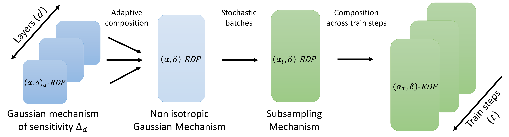

The library is based on tensorflow.
import tensorflow as tf
lip-dp dependencies¶
The need a model DP_Model that handles the noisification of gradients. It is trained with a loss. The model is initialized with the convenience function DPParameters.
from deel.lipdp import losses
from deel.lipdp.model import DP_Model
from deel.lipdp.model import DPParameters
The DP_Accountant callback keeps track of \((\epsilon,\delta)\)-DP values epoch after epoch. In practice we may be interested in reaching the maximum val_accuracy under privacy constraint \(\epsilon\): the convenience function get_max_epochs exactly does that by performing a dichotomy search over the number of epochs.
from deel.lipdp.model import DP_Accountant
from deel.lipdp.sensitivity import get_max_epochs
The framework requires a control of the maximum norm of inputs. This can be ensured with input clipping for example: bound_clip_value.
from deel.lipdp.pipeline import bound_clip_value
from deel.lipdp.pipeline import load_and_prepare_data
Setup DP Lipschitz model¶
Here we apply the "global" strategy, with a noise multiplier \(2.5\). Note that for Cifar-10 the dataset size is \(N=50,000\), and it is recommended that \(\delta<\frac{1}{N}\). So we propose a value of \(\delta=10^{-5}\).
import warnings
warnings.filterwarnings("ignore")
dp_parameters = DPParameters(
noisify_strategy="global",
noise_multiplier=4.0,
delta=1e-5,
)
epsilon_max = 10.0
With many parameters, it can be interesting to use local strategy over global, since the effective noise growths as \(\mathcal{O}(\sqrt{(D)})\) in global strategy. Since the privacy leakge is more important is local strategy, we compensate with high noise_multiplier.

Loading the data¶
We clip the elementwise input upper-bound to \(40.0\). The operates in HSV space. The train set is augmented with random left/right flips.
def augmentation_fct(image, label):
image = tf.image.random_flip_left_right(image)
return image, label
input_upper_bound = 30.0
ds_train, ds_test, dataset_metadata = load_and_prepare_data(
"cifar10",
colorspace="HSV",
batch_size=10_000,
drop_remainder=True, # accounting assumes fixed batch size
augmentation_fct=augmentation_fct,
bound_fct=bound_clip_value( # other strategies are possible, like normalization.
input_upper_bound
), # clipping preprocessing allows to control input bound
)
2023-05-24 17:27:24.335576: I tensorflow/core/platform/cpu_feature_guard.cc:151] This TensorFlow binary is optimized with oneAPI Deep Neural Network Library (oneDNN) to use the following CPU instructions in performance-critical operations: AVX2 FMA
To enable them in other operations, rebuild TensorFlow with the appropriate compiler flags.
2023-05-24 17:27:24.905888: I tensorflow/core/common_runtime/gpu/gpu_device.cc:1525] Created device /job:localhost/replica:0/task:0/device:GPU:0 with 47066 MB memory: -> device: 0, name: Quadro RTX 8000, pci bus id: 0000:03:00.0, compute capability: 7.5
Build the MLP Mixer model¶
We imitate the interface of Keras. We use common layers found in deel-lip, which a wrapper that handles the bound propagation.
from deel.lipdp.layers import DP_AddBias
from deel.lipdp.layers import DP_BoundedInput
from deel.lipdp.layers import DP_ClipGradient
from deel.lipdp.layers import DP_Flatten
from deel.lipdp.layers import DP_GroupSort
from deel.lipdp.layers import DP_Lambda
from deel.lipdp.layers import DP_LayerCentering
from deel.lipdp.layers import DP_Permute
from deel.lipdp.layers import DP_QuickSpectralDense
from deel.lipdp.layers import DP_Reshape
from deel.lipdp.layers import DP_ScaledGlobalL2NormPooling2D
from deel.lipdp.layers import DP_ScaledL2NormPooling2D
from deel.lipdp.layers import DP_QuickSpectralConv2D
The MLP Mixer uses residual connections. Residuals connections are handled with the utility function make_residuals that wraps the layers inside a block that handles bounds propagation.

from deel.lipdp.layers import make_residuals
Now, we proceed with the creation of the environnement.
skip_connections = False # use skip connections, like in original MLP Mixer architecture.
clip_loss_gradient = 2**0.5 # elementwise gradient is clipped to value sqrt(2) - which is the maximum for CCE loss.
add_biases = False # Add biases after linear transformations.
biases_norm_max = 0.05
hidden_size = 64
mlp_seq_dim = 64
mlp_channel_dim = 128
num_mixer_layers = 2 # Two MLP Mixer blocks.
layer_centering = False # Centering operation (like LayerNormalization without the reducing operation). Linear 1-Lipschitz.
patch_size = 4 # Number of pixels in each patch.
def create_MLP_Mixer(dp_parameters, dataset_metadata, upper_bound):
input_shape = (32, 32, 3)
layers = [DP_BoundedInput(input_shape=input_shape, upper_bound=upper_bound)]
layers.append(
DP_Lambda(
tf.image.extract_patches,
arguments=dict(
sizes=[1, patch_size, patch_size, 1],
strides=[1, patch_size, patch_size, 1],
rates=[1, 1, 1, 1],
padding="VALID",
),
)
)
seq_len = (input_shape[0] // patch_size) * (input_shape[1] // patch_size)
layers.append(DP_Reshape((seq_len, (patch_size ** 2) * input_shape[-1])))
layers.append(
DP_QuickSpectralDense(
units=hidden_size, use_bias=False, kernel_initializer="identity"
)
)
for _ in range(num_mixer_layers):
to_add = [
DP_Permute((2, 1)),
DP_QuickSpectralDense(
units=mlp_seq_dim, use_bias=False, kernel_initializer="identity"
),
]
if add_biases:
to_add.append(DP_AddBias(biases_norm_max))
to_add.append(DP_GroupSort(2))
if layer_centering:
to_add.append(DP_LayerCentering())
to_add += [
DP_QuickSpectralDense(
units=seq_len, use_bias=False, kernel_initializer="identity"
),
DP_Permute((2, 1)),
]
if skip_connections:
layers += make_residuals("1-lip-add", to_add)
else:
layers += to_add
to_add = [
DP_QuickSpectralDense(
units=mlp_channel_dim, use_bias=False, kernel_initializer="identity"
),
]
if add_biases:
to_add.append(DP_AddBias(biases_norm_max))
to_add.append(DP_GroupSort(2))
if layer_centering:
to_add.append(DP_LayerCentering())
to_add.append(
DP_QuickSpectralDense(
units=hidden_size, use_bias=False, kernel_initializer="identity"
)
)
if skip_connections:
layers += make_residuals("1-lip-add", to_add)
else:
layers += to_add
layers.append(DP_Flatten())
layers.append(
DP_QuickSpectralDense(units=10, use_bias=False, kernel_initializer="identity")
)
layers.append(DP_ClipGradient(clip_loss_gradient))
model = DP_Model(
layers,
dp_parameters=dp_parameters,
dataset_metadata=dataset_metadata,
name="mlp_mixer",
)
model.build(input_shape=(None, *input_shape))
return model
We compile the model with: * any first order optimizer (e.g Adam). No adaptation is needed. * a loss with known Lipschitz constant, e.g Categorical Cross-entropy with temperature.
model = create_MLP_Mixer(dp_parameters, dataset_metadata, input_upper_bound)
model.compile(
# Compile model using DP loss
loss=losses.DP_TauCategoricalCrossentropy(256.0),
# this method is compatible with any first order optimizer
optimizer=tf.keras.optimizers.Adam(learning_rate=2e-4),
metrics=["accuracy"],
)
model.summary()
Model: "mlp_mixer"
_________________________________________________________________
Layer (type) Output Shape Param #
=================================================================
dp__bounded_input (DP_Bound multiple 0
edInput)
dp__lambda (DP_Lambda) multiple 0
dp__reshape (DP_Reshape) multiple 0
dp__quick_spectral_dense (D multiple 3072
P_QuickSpectralDense)
dp__permute (DP_Permute) multiple 0
dp__quick_spectral_dense_1 multiple 4096
(DP_QuickSpectralDense)
dp__group_sort (DP_GroupSor multiple 0
t)
dp__quick_spectral_dense_2 multiple 4096
(DP_QuickSpectralDense)
dp__permute_1 (DP_Permute) multiple 0
dp__quick_spectral_dense_3 multiple 8192
(DP_QuickSpectralDense)
dp__group_sort_1 (DP_GroupS multiple 0
ort)
dp__quick_spectral_dense_4 multiple 8192
(DP_QuickSpectralDense)
dp__permute_2 (DP_Permute) multiple 0
dp__quick_spectral_dense_5 multiple 4096
(DP_QuickSpectralDense)
dp__group_sort_2 (DP_GroupS multiple 0
ort)
dp__quick_spectral_dense_6 multiple 4096
(DP_QuickSpectralDense)
dp__permute_3 (DP_Permute) multiple 0
dp__quick_spectral_dense_7 multiple 8192
(DP_QuickSpectralDense)
dp__group_sort_3 (DP_GroupS multiple 0
ort)
dp__quick_spectral_dense_8 multiple 8192
(DP_QuickSpectralDense)
dp__flatten (DP_Flatten) multiple 0
dp__quick_spectral_dense_9 multiple 40960
(DP_QuickSpectralDense)
dp__clip_gradient (DP_ClipG multiple 0
radient)
=================================================================
Total params: 93,184
Trainable params: 93,184
Non-trainable params: 0
_________________________________________________________________
Observe that the model contains only 246K parmaeters. This is an advantage of MLP Mixer architectures: the number of parameters is small. However the number of FLOPS can be quite high. Without gradient clipping, huge batch sizes can be used, which benefits to privacy/utility ratio.
In order to control epsilon, we compute the adequate number of epochs.
num_epochs = get_max_epochs(epsilon_max, model)
epoch bounds = (0, 512.0) and epsilon = 14.81894855578722 at epoch 512.0
epoch bounds = (256.0, 512.0) and epsilon = 9.820083418023108 at epoch 256.0
epoch bounds = (256.0, 384.0) and epsilon = 12.31951600358698 at epoch 384.0
epoch bounds = (256.0, 320.0) and epsilon = 11.069799714608529 at epoch 320.0
epoch bounds = (256.0, 288.0) and epsilon = 10.44494156631582 at epoch 288.0
epoch bounds = (256.0, 272.0) and epsilon = 10.132512492169463 at epoch 272.0
epoch bounds = (264.0, 272.0) and epsilon = 9.976297955096285 at epoch 264.0
epoch bounds = (264.0, 268.0) and epsilon = 10.054405223632873 at epoch 268.0
epoch bounds = (264.0, 266.0) and epsilon = 10.015351589364581 at epoch 266.0
epoch bounds = (265.0, 266.0) and epsilon = 9.995824772230431 at epoch 265.0
Train the model¶
The model can be trained, and the DP Accountant will automatically track the privacy loss.
hist = model.fit(
ds_train,
epochs=num_epochs,
validation_data=ds_test,
callbacks=[
# accounting is done thanks to a callback
DP_Accountant(log_fn="logging"), # wandb.log also available.
],
)
Epoch 1/265
5/5 [==============================] - ETA: 0s - loss: 0.1751 - accuracy: 0.1077
(0.5205893807331654, 1e-05)-DP guarantees for epoch 1
5/5 [==============================] - 8s 547ms/step - loss: 0.1751 - accuracy: 0.1077 - val_loss: 0.1409 - val_accuracy: 0.1045
Epoch 2/265
5/5 [==============================] - ETA: 0s - loss: 0.1243 - accuracy: 0.1061
(0.7169615437758403, 1e-05)-DP guarantees for epoch 2
5/5 [==============================] - 3s 451ms/step - loss: 0.1243 - accuracy: 0.1061 - val_loss: 0.1145 - val_accuracy: 0.1055
Epoch 3/265
5/5 [==============================] - ETA: 0s - loss: 0.1124 - accuracy: 0.1170
(0.8714581783028138, 1e-05)-DP guarantees for epoch 3
5/5 [==============================] - 3s 386ms/step - loss: 0.1124 - accuracy: 0.1170 - val_loss: 0.1095 - val_accuracy: 0.1124
Epoch 4/265
5/5 [==============================] - ETA: 0s - loss: 0.1051 - accuracy: 0.1178
(1.0041033056975341, 1e-05)-DP guarantees for epoch 4
5/5 [==============================] - 3s 416ms/step - loss: 0.1051 - accuracy: 0.1178 - val_loss: 0.1019 - val_accuracy: 0.1173
Epoch 5/265
5/5 [==============================] - ETA: 0s - loss: 0.0994 - accuracy: 0.1219
(1.121902451763874, 1e-05)-DP guarantees for epoch 5
5/5 [==============================] - 3s 404ms/step - loss: 0.0994 - accuracy: 0.1219 - val_loss: 0.0973 - val_accuracy: 0.1199
Epoch 6/265
5/5 [==============================] - ETA: 0s - loss: 0.0950 - accuracy: 0.1287
(1.2297900098052366, 1e-05)-DP guarantees for epoch 6
5/5 [==============================] - 3s 372ms/step - loss: 0.0950 - accuracy: 0.1287 - val_loss: 0.0952 - val_accuracy: 0.1274
Epoch 7/265
5/5 [==============================] - ETA: 0s - loss: 0.0927 - accuracy: 0.1332
(1.3301791512711914, 1e-05)-DP guarantees for epoch 7
5/5 [==============================] - 2s 355ms/step - loss: 0.0927 - accuracy: 0.1332 - val_loss: 0.0917 - val_accuracy: 0.1319
Epoch 8/265
5/5 [==============================] - ETA: 0s - loss: 0.0896 - accuracy: 0.1396
(1.425115891691246, 1e-05)-DP guarantees for epoch 8
5/5 [==============================] - 3s 360ms/step - loss: 0.0896 - accuracy: 0.1396 - val_loss: 0.0898 - val_accuracy: 0.1348
Epoch 9/265
5/5 [==============================] - ETA: 0s - loss: 0.0878 - accuracy: 0.1423
(1.512644960027369, 1e-05)-DP guarantees for epoch 9
5/5 [==============================] - 2s 367ms/step - loss: 0.0878 - accuracy: 0.1423 - val_loss: 0.0876 - val_accuracy: 0.1386
Epoch 10/265
5/5 [==============================] - ETA: 0s - loss: 0.0857 - accuracy: 0.1461
(1.599192443478913, 1e-05)-DP guarantees for epoch 10
5/5 [==============================] - 3s 359ms/step - loss: 0.0857 - accuracy: 0.1461 - val_loss: 0.0859 - val_accuracy: 0.1469
Epoch 11/265
5/5 [==============================] - ETA: 0s - loss: 0.0840 - accuracy: 0.1543
(1.6782666312983627, 1e-05)-DP guarantees for epoch 11
5/5 [==============================] - 3s 353ms/step - loss: 0.0840 - accuracy: 0.1543 - val_loss: 0.0844 - val_accuracy: 0.1497
Epoch 12/265
5/5 [==============================] - ETA: 0s - loss: 0.0829 - accuracy: 0.1556
(1.7566369758486253, 1e-05)-DP guarantees for epoch 12
5/5 [==============================] - 3s 358ms/step - loss: 0.0829 - accuracy: 0.1556 - val_loss: 0.0829 - val_accuracy: 0.1516
Epoch 13/265
5/5 [==============================] - ETA: 0s - loss: 0.0816 - accuracy: 0.1578
(1.833150779023074, 1e-05)-DP guarantees for epoch 13
5/5 [==============================] - 3s 367ms/step - loss: 0.0816 - accuracy: 0.1578 - val_loss: 0.0819 - val_accuracy: 0.1565
Epoch 14/265
5/5 [==============================] - ETA: 0s - loss: 0.0806 - accuracy: 0.1618
(1.903546174784228, 1e-05)-DP guarantees for epoch 14
5/5 [==============================] - 3s 370ms/step - loss: 0.0806 - accuracy: 0.1618 - val_loss: 0.0809 - val_accuracy: 0.1592
Epoch 15/265
5/5 [==============================] - ETA: 0s - loss: 0.0794 - accuracy: 0.1657
(1.9739415712927695, 1e-05)-DP guarantees for epoch 15
5/5 [==============================] - 3s 353ms/step - loss: 0.0794 - accuracy: 0.1657 - val_loss: 0.0799 - val_accuracy: 0.1614
Epoch 16/265
5/5 [==============================] - ETA: 0s - loss: 0.0788 - accuracy: 0.1654
(2.044336966003477, 1e-05)-DP guarantees for epoch 16
5/5 [==============================] - 2s 358ms/step - loss: 0.0788 - accuracy: 0.1654 - val_loss: 0.0791 - val_accuracy: 0.1642
Epoch 17/265
5/5 [==============================] - ETA: 0s - loss: 0.0778 - accuracy: 0.1696
(2.111107170532668, 1e-05)-DP guarantees for epoch 17
5/5 [==============================] - 3s 373ms/step - loss: 0.0778 - accuracy: 0.1696 - val_loss: 0.0783 - val_accuracy: 0.1667
Epoch 18/265
5/5 [==============================] - ETA: 0s - loss: 0.0773 - accuracy: 0.1720
(2.173720558035018, 1e-05)-DP guarantees for epoch 18
5/5 [==============================] - 3s 355ms/step - loss: 0.0773 - accuracy: 0.1720 - val_loss: 0.0775 - val_accuracy: 0.1713
Epoch 19/265
5/5 [==============================] - ETA: 0s - loss: 0.0765 - accuracy: 0.1745
(2.236333946199693, 1e-05)-DP guarantees for epoch 19
5/5 [==============================] - 3s 357ms/step - loss: 0.0765 - accuracy: 0.1745 - val_loss: 0.0768 - val_accuracy: 0.1718
Epoch 20/265
5/5 [==============================] - ETA: 0s - loss: 0.0755 - accuracy: 0.1785
(2.298947335447459, 1e-05)-DP guarantees for epoch 20
5/5 [==============================] - 3s 351ms/step - loss: 0.0755 - accuracy: 0.1785 - val_loss: 0.0761 - val_accuracy: 0.1749
Epoch 21/265
5/5 [==============================] - ETA: 0s - loss: 0.0751 - accuracy: 0.1809
(2.3615607218535017, 1e-05)-DP guarantees for epoch 21
5/5 [==============================] - 2s 370ms/step - loss: 0.0751 - accuracy: 0.1809 - val_loss: 0.0755 - val_accuracy: 0.1779
Epoch 22/265
5/5 [==============================] - ETA: 0s - loss: 0.0744 - accuracy: 0.1807
(2.424031214499055, 1e-05)-DP guarantees for epoch 22
5/5 [==============================] - 3s 359ms/step - loss: 0.0744 - accuracy: 0.1807 - val_loss: 0.0749 - val_accuracy: 0.1782
Epoch 23/265
5/5 [==============================] - ETA: 0s - loss: 0.0737 - accuracy: 0.1829
(2.4794700865598074, 1e-05)-DP guarantees for epoch 23
5/5 [==============================] - 2s 353ms/step - loss: 0.0737 - accuracy: 0.1829 - val_loss: 0.0744 - val_accuracy: 0.1796
Epoch 24/265
5/5 [==============================] - ETA: 0s - loss: 0.0735 - accuracy: 0.1836
(2.5344857802909178, 1e-05)-DP guarantees for epoch 24
5/5 [==============================] - 2s 353ms/step - loss: 0.0735 - accuracy: 0.1836 - val_loss: 0.0738 - val_accuracy: 0.1815
Epoch 25/265
5/5 [==============================] - ETA: 0s - loss: 0.0730 - accuracy: 0.1853
(2.589501472054093, 1e-05)-DP guarantees for epoch 25
5/5 [==============================] - 3s 371ms/step - loss: 0.0730 - accuracy: 0.1853 - val_loss: 0.0733 - val_accuracy: 0.1836
Epoch 26/265
5/5 [==============================] - ETA: 0s - loss: 0.0726 - accuracy: 0.1884
(2.6445171621630954, 1e-05)-DP guarantees for epoch 26
5/5 [==============================] - 3s 356ms/step - loss: 0.0726 - accuracy: 0.1884 - val_loss: 0.0729 - val_accuracy: 0.1857
Epoch 27/265
5/5 [==============================] - ETA: 0s - loss: 0.0722 - accuracy: 0.1881
(2.699532854747239, 1e-05)-DP guarantees for epoch 27
5/5 [==============================] - 2s 349ms/step - loss: 0.0722 - accuracy: 0.1881 - val_loss: 0.0723 - val_accuracy: 0.1882
Epoch 28/265
5/5 [==============================] - ETA: 0s - loss: 0.0715 - accuracy: 0.1901
(2.754548546420506, 1e-05)-DP guarantees for epoch 28
5/5 [==============================] - 3s 371ms/step - loss: 0.0715 - accuracy: 0.1901 - val_loss: 0.0718 - val_accuracy: 0.1879
Epoch 29/265
5/5 [==============================] - ETA: 0s - loss: 0.0711 - accuracy: 0.1928
(2.809564239271509, 1e-05)-DP guarantees for epoch 29
5/5 [==============================] - 3s 360ms/step - loss: 0.0711 - accuracy: 0.1928 - val_loss: 0.0715 - val_accuracy: 0.1915
Epoch 30/265
5/5 [==============================] - ETA: 0s - loss: 0.0710 - accuracy: 0.1933
(2.8645799306976425, 1e-05)-DP guarantees for epoch 30
5/5 [==============================] - 2s 362ms/step - loss: 0.0710 - accuracy: 0.1933 - val_loss: 0.0710 - val_accuracy: 0.1922
Epoch 31/265
5/5 [==============================] - ETA: 0s - loss: 0.0701 - accuracy: 0.1993
(2.915773408283026, 1e-05)-DP guarantees for epoch 31
5/5 [==============================] - 2s 352ms/step - loss: 0.0701 - accuracy: 0.1993 - val_loss: 0.0706 - val_accuracy: 0.1940
Epoch 32/265
5/5 [==============================] - ETA: 0s - loss: 0.0698 - accuracy: 0.1996
(2.9633676512735834, 1e-05)-DP guarantees for epoch 32
5/5 [==============================] - 2s 355ms/step - loss: 0.0698 - accuracy: 0.1996 - val_loss: 0.0702 - val_accuracy: 0.1964
Epoch 33/265
5/5 [==============================] - ETA: 0s - loss: 0.0695 - accuracy: 0.2004
(3.010961895901816, 1e-05)-DP guarantees for epoch 33
5/5 [==============================] - 3s 375ms/step - loss: 0.0695 - accuracy: 0.2004 - val_loss: 0.0699 - val_accuracy: 0.1984
Epoch 34/265
5/5 [==============================] - ETA: 0s - loss: 0.0692 - accuracy: 0.1995
(3.0585561401091397, 1e-05)-DP guarantees for epoch 34
5/5 [==============================] - 3s 352ms/step - loss: 0.0692 - accuracy: 0.1995 - val_loss: 0.0696 - val_accuracy: 0.1975
Epoch 35/265
5/5 [==============================] - ETA: 0s - loss: 0.0685 - accuracy: 0.2045
(3.1061503817189315, 1e-05)-DP guarantees for epoch 35
5/5 [==============================] - 3s 349ms/step - loss: 0.0685 - accuracy: 0.2045 - val_loss: 0.0692 - val_accuracy: 0.2009
Epoch 36/265
5/5 [==============================] - ETA: 0s - loss: 0.0686 - accuracy: 0.2045
(3.1537446235861095, 1e-05)-DP guarantees for epoch 36
5/5 [==============================] - 3s 364ms/step - loss: 0.0686 - accuracy: 0.2045 - val_loss: 0.0689 - val_accuracy: 0.2032
Epoch 37/265
5/5 [==============================] - ETA: 0s - loss: 0.0684 - accuracy: 0.2033
(3.2013388677062005, 1e-05)-DP guarantees for epoch 37
5/5 [==============================] - 2s 349ms/step - loss: 0.0684 - accuracy: 0.2033 - val_loss: 0.0686 - val_accuracy: 0.2033
Epoch 38/265
5/5 [==============================] - ETA: 0s - loss: 0.0684 - accuracy: 0.2024
(3.2489331117939875, 1e-05)-DP guarantees for epoch 38
5/5 [==============================] - 3s 352ms/step - loss: 0.0684 - accuracy: 0.2024 - val_loss: 0.0683 - val_accuracy: 0.2046
Epoch 39/265
5/5 [==============================] - ETA: 0s - loss: 0.0675 - accuracy: 0.2064
(3.296527354122463, 1e-05)-DP guarantees for epoch 39
5/5 [==============================] - 3s 390ms/step - loss: 0.0675 - accuracy: 0.2064 - val_loss: 0.0681 - val_accuracy: 0.2055
Epoch 40/265
5/5 [==============================] - ETA: 0s - loss: 0.0678 - accuracy: 0.2071
(3.3441215974412257, 1e-05)-DP guarantees for epoch 40
5/5 [==============================] - 2s 343ms/step - loss: 0.0678 - accuracy: 0.2071 - val_loss: 0.0679 - val_accuracy: 0.2061
Epoch 41/265
5/5 [==============================] - ETA: 0s - loss: 0.0670 - accuracy: 0.2076
(3.391715841019588, 1e-05)-DP guarantees for epoch 41
5/5 [==============================] - 2s 348ms/step - loss: 0.0670 - accuracy: 0.2076 - val_loss: 0.0676 - val_accuracy: 0.2047
Epoch 42/265
5/5 [==============================] - ETA: 0s - loss: 0.0670 - accuracy: 0.2074
(3.4393100820764655, 1e-05)-DP guarantees for epoch 42
5/5 [==============================] - 3s 362ms/step - loss: 0.0670 - accuracy: 0.2074 - val_loss: 0.0673 - val_accuracy: 0.2077
Epoch 43/265
5/5 [==============================] - ETA: 0s - loss: 0.0668 - accuracy: 0.2091
(3.4869043257012042, 1e-05)-DP guarantees for epoch 43
5/5 [==============================] - 3s 365ms/step - loss: 0.0668 - accuracy: 0.2091 - val_loss: 0.0671 - val_accuracy: 0.2098
Epoch 44/265
5/5 [==============================] - ETA: 0s - loss: 0.0664 - accuracy: 0.2133
(3.5344943006583662, 1e-05)-DP guarantees for epoch 44
5/5 [==============================] - 2s 353ms/step - loss: 0.0664 - accuracy: 0.2133 - val_loss: 0.0668 - val_accuracy: 0.2111
Epoch 45/265
5/5 [==============================] - ETA: 0s - loss: 0.0662 - accuracy: 0.2116
(3.577278802435221, 1e-05)-DP guarantees for epoch 45
5/5 [==============================] - 3s 368ms/step - loss: 0.0662 - accuracy: 0.2116 - val_loss: 0.0666 - val_accuracy: 0.2110
Epoch 46/265
5/5 [==============================] - ETA: 0s - loss: 0.0658 - accuracy: 0.2144
(3.6176202954309518, 1e-05)-DP guarantees for epoch 46
5/5 [==============================] - 3s 363ms/step - loss: 0.0658 - accuracy: 0.2144 - val_loss: 0.0663 - val_accuracy: 0.2136
Epoch 47/265
5/5 [==============================] - ETA: 0s - loss: 0.0660 - accuracy: 0.2136
(3.6579617884266824, 1e-05)-DP guarantees for epoch 47
5/5 [==============================] - 3s 361ms/step - loss: 0.0660 - accuracy: 0.2136 - val_loss: 0.0662 - val_accuracy: 0.2103
Epoch 48/265
5/5 [==============================] - ETA: 0s - loss: 0.0658 - accuracy: 0.2124
(3.698303280878773, 1e-05)-DP guarantees for epoch 48
5/5 [==============================] - 3s 378ms/step - loss: 0.0658 - accuracy: 0.2124 - val_loss: 0.0660 - val_accuracy: 0.2126
Epoch 49/265
5/5 [==============================] - ETA: 0s - loss: 0.0651 - accuracy: 0.2170
(3.7386447748463074, 1e-05)-DP guarantees for epoch 49
5/5 [==============================] - 3s 356ms/step - loss: 0.0651 - accuracy: 0.2170 - val_loss: 0.0658 - val_accuracy: 0.2141
Epoch 50/265
5/5 [==============================] - ETA: 0s - loss: 0.0650 - accuracy: 0.2147
(3.778986264959221, 1e-05)-DP guarantees for epoch 50
5/5 [==============================] - 2s 359ms/step - loss: 0.0650 - accuracy: 0.2147 - val_loss: 0.0657 - val_accuracy: 0.2139
Epoch 51/265
5/5 [==============================] - ETA: 0s - loss: 0.0649 - accuracy: 0.2157
(3.819327759198358, 1e-05)-DP guarantees for epoch 51
5/5 [==============================] - 3s 362ms/step - loss: 0.0649 - accuracy: 0.2157 - val_loss: 0.0654 - val_accuracy: 0.2154
Epoch 52/265
5/5 [==============================] - ETA: 0s - loss: 0.0646 - accuracy: 0.2177
(3.859669252353283, 1e-05)-DP guarantees for epoch 52
5/5 [==============================] - 3s 374ms/step - loss: 0.0646 - accuracy: 0.2177 - val_loss: 0.0652 - val_accuracy: 0.2159
Epoch 53/265
5/5 [==============================] - ETA: 0s - loss: 0.0647 - accuracy: 0.2164
(3.900010744909916, 1e-05)-DP guarantees for epoch 53
5/5 [==============================] - 3s 398ms/step - loss: 0.0647 - accuracy: 0.2164 - val_loss: 0.0651 - val_accuracy: 0.2139
Epoch 54/265
5/5 [==============================] - ETA: 0s - loss: 0.0642 - accuracy: 0.2180
(3.9403522382284417, 1e-05)-DP guarantees for epoch 54
5/5 [==============================] - 2s 356ms/step - loss: 0.0642 - accuracy: 0.2180 - val_loss: 0.0649 - val_accuracy: 0.2165
Epoch 55/265
5/5 [==============================] - ETA: 0s - loss: 0.0643 - accuracy: 0.2178
(3.9806937272852823, 1e-05)-DP guarantees for epoch 55
5/5 [==============================] - 3s 385ms/step - loss: 0.0643 - accuracy: 0.2178 - val_loss: 0.0648 - val_accuracy: 0.2190
Epoch 56/265
5/5 [==============================] - ETA: 0s - loss: 0.0642 - accuracy: 0.2194
(4.021035219696142, 1e-05)-DP guarantees for epoch 56
5/5 [==============================] - 3s 358ms/step - loss: 0.0642 - accuracy: 0.2194 - val_loss: 0.0646 - val_accuracy: 0.2190
Epoch 57/265
5/5 [==============================] - ETA: 0s - loss: 0.0641 - accuracy: 0.2193
(4.061376713362479, 1e-05)-DP guarantees for epoch 57
5/5 [==============================] - 3s 357ms/step - loss: 0.0641 - accuracy: 0.2193 - val_loss: 0.0644 - val_accuracy: 0.2188
Epoch 58/265
5/5 [==============================] - ETA: 0s - loss: 0.0637 - accuracy: 0.2209
(4.101718205195644, 1e-05)-DP guarantees for epoch 58
5/5 [==============================] - 3s 389ms/step - loss: 0.0637 - accuracy: 0.2209 - val_loss: 0.0643 - val_accuracy: 0.2203
Epoch 59/265
5/5 [==============================] - ETA: 0s - loss: 0.0636 - accuracy: 0.2207
(4.142059698567775, 1e-05)-DP guarantees for epoch 59
5/5 [==============================] - 2s 350ms/step - loss: 0.0636 - accuracy: 0.2207 - val_loss: 0.0641 - val_accuracy: 0.2217
Epoch 60/265
5/5 [==============================] - ETA: 0s - loss: 0.0631 - accuracy: 0.2238
(4.182401188996273, 1e-05)-DP guarantees for epoch 60
5/5 [==============================] - 2s 350ms/step - loss: 0.0631 - accuracy: 0.2238 - val_loss: 0.0639 - val_accuracy: 0.2218
Epoch 61/265
5/5 [==============================] - ETA: 0s - loss: 0.0635 - accuracy: 0.2223
(4.222742681534986, 1e-05)-DP guarantees for epoch 61
5/5 [==============================] - 3s 357ms/step - loss: 0.0635 - accuracy: 0.2223 - val_loss: 0.0638 - val_accuracy: 0.2214
Epoch 62/265
5/5 [==============================] - ETA: 0s - loss: 0.0628 - accuracy: 0.2212
(4.263084178169554, 1e-05)-DP guarantees for epoch 62
5/5 [==============================] - 3s 358ms/step - loss: 0.0628 - accuracy: 0.2212 - val_loss: 0.0637 - val_accuracy: 0.2214
Epoch 63/265
5/5 [==============================] - ETA: 0s - loss: 0.0629 - accuracy: 0.2236
(4.303425669322495, 1e-05)-DP guarantees for epoch 63
5/5 [==============================] - 3s 357ms/step - loss: 0.0629 - accuracy: 0.2236 - val_loss: 0.0635 - val_accuracy: 0.2238
Epoch 64/265
5/5 [==============================] - ETA: 0s - loss: 0.0628 - accuracy: 0.2244
(4.343767159305043, 1e-05)-DP guarantees for epoch 64
5/5 [==============================] - 2s 357ms/step - loss: 0.0628 - accuracy: 0.2244 - val_loss: 0.0633 - val_accuracy: 0.2229
Epoch 65/265
5/5 [==============================] - ETA: 0s - loss: 0.0627 - accuracy: 0.2242
(4.384108652677016, 1e-05)-DP guarantees for epoch 65
5/5 [==============================] - 3s 375ms/step - loss: 0.0627 - accuracy: 0.2242 - val_loss: 0.0632 - val_accuracy: 0.2232
Epoch 66/265
5/5 [==============================] - ETA: 0s - loss: 0.0625 - accuracy: 0.2260
(4.42445014497077, 1e-05)-DP guarantees for epoch 66
5/5 [==============================] - 2s 344ms/step - loss: 0.0625 - accuracy: 0.2260 - val_loss: 0.0630 - val_accuracy: 0.2248
Epoch 67/265
5/5 [==============================] - ETA: 0s - loss: 0.0625 - accuracy: 0.2271
(4.4647916365799585, 1e-05)-DP guarantees for epoch 67
5/5 [==============================] - 3s 368ms/step - loss: 0.0625 - accuracy: 0.2271 - val_loss: 0.0628 - val_accuracy: 0.2265
Epoch 68/265
5/5 [==============================] - ETA: 0s - loss: 0.0622 - accuracy: 0.2292
(4.505133128586104, 1e-05)-DP guarantees for epoch 68
5/5 [==============================] - 3s 365ms/step - loss: 0.0622 - accuracy: 0.2292 - val_loss: 0.0626 - val_accuracy: 0.2242
Epoch 69/265
5/5 [==============================] - ETA: 0s - loss: 0.0623 - accuracy: 0.2276
(4.544958472325187, 1e-05)-DP guarantees for epoch 69
5/5 [==============================] - 2s 359ms/step - loss: 0.0623 - accuracy: 0.2276 - val_loss: 0.0626 - val_accuracy: 0.2254
Epoch 70/265
5/5 [==============================] - ETA: 0s - loss: 0.0619 - accuracy: 0.2288
(4.580253889044595, 1e-05)-DP guarantees for epoch 70
5/5 [==============================] - 2s 362ms/step - loss: 0.0619 - accuracy: 0.2288 - val_loss: 0.0624 - val_accuracy: 0.2272
Epoch 71/265
5/5 [==============================] - ETA: 0s - loss: 0.0619 - accuracy: 0.2288
(4.613504255128257, 1e-05)-DP guarantees for epoch 71
5/5 [==============================] - 2s 356ms/step - loss: 0.0619 - accuracy: 0.2288 - val_loss: 0.0623 - val_accuracy: 0.2258
Epoch 72/265
5/5 [==============================] - ETA: 0s - loss: 0.0617 - accuracy: 0.2283
(4.646754619793705, 1e-05)-DP guarantees for epoch 72
5/5 [==============================] - 3s 379ms/step - loss: 0.0617 - accuracy: 0.2283 - val_loss: 0.0622 - val_accuracy: 0.2262
Epoch 73/265
5/5 [==============================] - ETA: 0s - loss: 0.0615 - accuracy: 0.2309
(4.680004986868141, 1e-05)-DP guarantees for epoch 73
5/5 [==============================] - 3s 363ms/step - loss: 0.0615 - accuracy: 0.2309 - val_loss: 0.0621 - val_accuracy: 0.2292
Epoch 74/265
5/5 [==============================] - ETA: 0s - loss: 0.0614 - accuracy: 0.2298
(4.713255352027643, 1e-05)-DP guarantees for epoch 74
5/5 [==============================] - 3s 392ms/step - loss: 0.0614 - accuracy: 0.2298 - val_loss: 0.0619 - val_accuracy: 0.2273
Epoch 75/265
5/5 [==============================] - ETA: 0s - loss: 0.0616 - accuracy: 0.2288
(4.746505714565027, 1e-05)-DP guarantees for epoch 75
5/5 [==============================] - 2s 346ms/step - loss: 0.0616 - accuracy: 0.2288 - val_loss: 0.0618 - val_accuracy: 0.2283
Epoch 76/265
5/5 [==============================] - ETA: 0s - loss: 0.0613 - accuracy: 0.2314
(4.779756080992392, 1e-05)-DP guarantees for epoch 76
5/5 [==============================] - 3s 375ms/step - loss: 0.0613 - accuracy: 0.2314 - val_loss: 0.0617 - val_accuracy: 0.2285
Epoch 77/265
5/5 [==============================] - ETA: 0s - loss: 0.0611 - accuracy: 0.2321
(4.813006446042454, 1e-05)-DP guarantees for epoch 77
5/5 [==============================] - 3s 368ms/step - loss: 0.0611 - accuracy: 0.2321 - val_loss: 0.0615 - val_accuracy: 0.2279
Epoch 78/265
5/5 [==============================] - ETA: 0s - loss: 0.0609 - accuracy: 0.2321
(4.84625681135709, 1e-05)-DP guarantees for epoch 78
5/5 [==============================] - 2s 366ms/step - loss: 0.0609 - accuracy: 0.2321 - val_loss: 0.0614 - val_accuracy: 0.2309
Epoch 79/265
5/5 [==============================] - ETA: 0s - loss: 0.0608 - accuracy: 0.2326
(4.879507178851574, 1e-05)-DP guarantees for epoch 79
5/5 [==============================] - 3s 359ms/step - loss: 0.0608 - accuracy: 0.2326 - val_loss: 0.0613 - val_accuracy: 0.2316
Epoch 80/265
5/5 [==============================] - ETA: 0s - loss: 0.0608 - accuracy: 0.2311
(4.912757545677179, 1e-05)-DP guarantees for epoch 80
5/5 [==============================] - 2s 352ms/step - loss: 0.0608 - accuracy: 0.2311 - val_loss: 0.0612 - val_accuracy: 0.2311
Epoch 81/265
5/5 [==============================] - ETA: 0s - loss: 0.0607 - accuracy: 0.2333
(4.9460079085624, 1e-05)-DP guarantees for epoch 81
5/5 [==============================] - 2s 344ms/step - loss: 0.0607 - accuracy: 0.2333 - val_loss: 0.0611 - val_accuracy: 0.2317
Epoch 82/265
5/5 [==============================] - ETA: 0s - loss: 0.0607 - accuracy: 0.2341
(4.979258270989774, 1e-05)-DP guarantees for epoch 82
5/5 [==============================] - 2s 339ms/step - loss: 0.0607 - accuracy: 0.2341 - val_loss: 0.0610 - val_accuracy: 0.2338
Epoch 83/265
5/5 [==============================] - ETA: 0s - loss: 0.0604 - accuracy: 0.2339
(5.012508634818511, 1e-05)-DP guarantees for epoch 83
5/5 [==============================] - 2s 358ms/step - loss: 0.0604 - accuracy: 0.2339 - val_loss: 0.0609 - val_accuracy: 0.2318
Epoch 84/265
5/5 [==============================] - ETA: 0s - loss: 0.0605 - accuracy: 0.2348
(5.045759003430268, 1e-05)-DP guarantees for epoch 84
5/5 [==============================] - 3s 360ms/step - loss: 0.0605 - accuracy: 0.2348 - val_loss: 0.0608 - val_accuracy: 0.2312
Epoch 85/265
5/5 [==============================] - ETA: 0s - loss: 0.0603 - accuracy: 0.2332
(5.0790093680054635, 1e-05)-DP guarantees for epoch 85
5/5 [==============================] - 3s 348ms/step - loss: 0.0603 - accuracy: 0.2332 - val_loss: 0.0607 - val_accuracy: 0.2326
Epoch 86/265
5/5 [==============================] - ETA: 0s - loss: 0.0600 - accuracy: 0.2355
(5.112259736439092, 1e-05)-DP guarantees for epoch 86
5/5 [==============================] - 3s 364ms/step - loss: 0.0600 - accuracy: 0.2355 - val_loss: 0.0606 - val_accuracy: 0.2333
Epoch 87/265
5/5 [==============================] - ETA: 0s - loss: 0.0600 - accuracy: 0.2357
(5.14551009793596, 1e-05)-DP guarantees for epoch 87
5/5 [==============================] - 2s 351ms/step - loss: 0.0600 - accuracy: 0.2357 - val_loss: 0.0604 - val_accuracy: 0.2335
Epoch 88/265
5/5 [==============================] - ETA: 0s - loss: 0.0598 - accuracy: 0.2397
(5.178760460033292, 1e-05)-DP guarantees for epoch 88
5/5 [==============================] - 2s 348ms/step - loss: 0.0598 - accuracy: 0.2397 - val_loss: 0.0603 - val_accuracy: 0.2327
Epoch 89/265
5/5 [==============================] - ETA: 0s - loss: 0.0596 - accuracy: 0.2377
(5.212010824793953, 1e-05)-DP guarantees for epoch 89
5/5 [==============================] - 2s 345ms/step - loss: 0.0596 - accuracy: 0.2377 - val_loss: 0.0602 - val_accuracy: 0.2333
Epoch 90/265
5/5 [==============================] - ETA: 0s - loss: 0.0597 - accuracy: 0.2372
(5.24526119058743, 1e-05)-DP guarantees for epoch 90
5/5 [==============================] - 2s 356ms/step - loss: 0.0597 - accuracy: 0.2372 - val_loss: 0.0601 - val_accuracy: 0.2336
Epoch 91/265
5/5 [==============================] - ETA: 0s - loss: 0.0595 - accuracy: 0.2367
(5.278511560314511, 1e-05)-DP guarantees for epoch 91
5/5 [==============================] - 2s 361ms/step - loss: 0.0595 - accuracy: 0.2367 - val_loss: 0.0600 - val_accuracy: 0.2331
Epoch 92/265
5/5 [==============================] - ETA: 0s - loss: 0.0598 - accuracy: 0.2373
(5.311761920262455, 1e-05)-DP guarantees for epoch 92
5/5 [==============================] - 3s 355ms/step - loss: 0.0598 - accuracy: 0.2373 - val_loss: 0.0599 - val_accuracy: 0.2358
Epoch 93/265
5/5 [==============================] - ETA: 0s - loss: 0.0594 - accuracy: 0.2368
(5.3450122912656255, 1e-05)-DP guarantees for epoch 93
5/5 [==============================] - 3s 364ms/step - loss: 0.0594 - accuracy: 0.2368 - val_loss: 0.0598 - val_accuracy: 0.2346
Epoch 94/265
5/5 [==============================] - ETA: 0s - loss: 0.0592 - accuracy: 0.2380
(5.37826264973137, 1e-05)-DP guarantees for epoch 94
5/5 [==============================] - 2s 351ms/step - loss: 0.0592 - accuracy: 0.2380 - val_loss: 0.0597 - val_accuracy: 0.2347
Epoch 95/265
5/5 [==============================] - ETA: 0s - loss: 0.0593 - accuracy: 0.2357
(5.4115130208687106, 1e-05)-DP guarantees for epoch 95
5/5 [==============================] - 2s 360ms/step - loss: 0.0593 - accuracy: 0.2357 - val_loss: 0.0596 - val_accuracy: 0.2348
Epoch 96/265
5/5 [==============================] - ETA: 0s - loss: 0.0594 - accuracy: 0.2376
(5.444763387799843, 1e-05)-DP guarantees for epoch 96
5/5 [==============================] - 2s 349ms/step - loss: 0.0594 - accuracy: 0.2376 - val_loss: 0.0595 - val_accuracy: 0.2362
Epoch 97/265
5/5 [==============================] - ETA: 0s - loss: 0.0589 - accuracy: 0.2411
(5.47801375480832, 1e-05)-DP guarantees for epoch 97
5/5 [==============================] - 2s 363ms/step - loss: 0.0589 - accuracy: 0.2411 - val_loss: 0.0594 - val_accuracy: 0.2375
Epoch 98/265
5/5 [==============================] - ETA: 0s - loss: 0.0590 - accuracy: 0.2404
(5.511264111964721, 1e-05)-DP guarantees for epoch 98
5/5 [==============================] - 2s 350ms/step - loss: 0.0590 - accuracy: 0.2404 - val_loss: 0.0593 - val_accuracy: 0.2377
Epoch 99/265
5/5 [==============================] - ETA: 0s - loss: 0.0586 - accuracy: 0.2406
(5.544514479570887, 1e-05)-DP guarantees for epoch 99
5/5 [==============================] - 2s 347ms/step - loss: 0.0586 - accuracy: 0.2406 - val_loss: 0.0593 - val_accuracy: 0.2389
Epoch 100/265
5/5 [==============================] - ETA: 0s - loss: 0.0587 - accuracy: 0.2436
(5.5777648468507035, 1e-05)-DP guarantees for epoch 100
5/5 [==============================] - 3s 356ms/step - loss: 0.0587 - accuracy: 0.2436 - val_loss: 0.0592 - val_accuracy: 0.2383
Epoch 101/265
5/5 [==============================] - ETA: 0s - loss: 0.0586 - accuracy: 0.2405
(5.611015209476669, 1e-05)-DP guarantees for epoch 101
5/5 [==============================] - 3s 362ms/step - loss: 0.0586 - accuracy: 0.2405 - val_loss: 0.0590 - val_accuracy: 0.2382
Epoch 102/265
5/5 [==============================] - ETA: 0s - loss: 0.0586 - accuracy: 0.2409
(5.644265572603777, 1e-05)-DP guarantees for epoch 102
5/5 [==============================] - 3s 359ms/step - loss: 0.0586 - accuracy: 0.2409 - val_loss: 0.0589 - val_accuracy: 0.2376
Epoch 103/265
5/5 [==============================] - ETA: 0s - loss: 0.0584 - accuracy: 0.2425
(5.67751593629532, 1e-05)-DP guarantees for epoch 103
5/5 [==============================] - 3s 366ms/step - loss: 0.0584 - accuracy: 0.2425 - val_loss: 0.0588 - val_accuracy: 0.2397
Epoch 104/265
5/5 [==============================] - ETA: 0s - loss: 0.0583 - accuracy: 0.2422
(5.710766303023046, 1e-05)-DP guarantees for epoch 104
5/5 [==============================] - 3s 370ms/step - loss: 0.0583 - accuracy: 0.2422 - val_loss: 0.0587 - val_accuracy: 0.2384
Epoch 105/265
5/5 [==============================] - ETA: 0s - loss: 0.0582 - accuracy: 0.2425
(5.7440166690784755, 1e-05)-DP guarantees for epoch 105
5/5 [==============================] - 3s 364ms/step - loss: 0.0582 - accuracy: 0.2425 - val_loss: 0.0586 - val_accuracy: 0.2383
Epoch 106/265
5/5 [==============================] - ETA: 0s - loss: 0.0583 - accuracy: 0.2411
(5.777267031618594, 1e-05)-DP guarantees for epoch 106
5/5 [==============================] - 2s 345ms/step - loss: 0.0583 - accuracy: 0.2411 - val_loss: 0.0586 - val_accuracy: 0.2387
Epoch 107/265
5/5 [==============================] - ETA: 0s - loss: 0.0578 - accuracy: 0.2438
(5.8105173958576675, 1e-05)-DP guarantees for epoch 107
5/5 [==============================] - 2s 343ms/step - loss: 0.0578 - accuracy: 0.2438 - val_loss: 0.0585 - val_accuracy: 0.2409
Epoch 108/265
5/5 [==============================] - ETA: 0s - loss: 0.0582 - accuracy: 0.2442
(5.843767765269359, 1e-05)-DP guarantees for epoch 108
5/5 [==============================] - 2s 359ms/step - loss: 0.0582 - accuracy: 0.2442 - val_loss: 0.0584 - val_accuracy: 0.2440
Epoch 109/265
5/5 [==============================] - ETA: 0s - loss: 0.0578 - accuracy: 0.2456
(5.877018127929281, 1e-05)-DP guarantees for epoch 109
5/5 [==============================] - 2s 355ms/step - loss: 0.0578 - accuracy: 0.2456 - val_loss: 0.0584 - val_accuracy: 0.2419
Epoch 110/265
5/5 [==============================] - ETA: 0s - loss: 0.0580 - accuracy: 0.2440
(5.910268490844311, 1e-05)-DP guarantees for epoch 110
5/5 [==============================] - 2s 362ms/step - loss: 0.0580 - accuracy: 0.2440 - val_loss: 0.0583 - val_accuracy: 0.2429
Epoch 111/265
5/5 [==============================] - ETA: 0s - loss: 0.0578 - accuracy: 0.2473
(5.943518855328065, 1e-05)-DP guarantees for epoch 111
5/5 [==============================] - 2s 350ms/step - loss: 0.0578 - accuracy: 0.2473 - val_loss: 0.0583 - val_accuracy: 0.2448
Epoch 112/265
5/5 [==============================] - ETA: 0s - loss: 0.0577 - accuracy: 0.2469
(5.9767692222925275, 1e-05)-DP guarantees for epoch 112
5/5 [==============================] - 3s 348ms/step - loss: 0.0577 - accuracy: 0.2469 - val_loss: 0.0582 - val_accuracy: 0.2447
Epoch 113/265
5/5 [==============================] - ETA: 0s - loss: 0.0579 - accuracy: 0.2479
(6.0100195891034165, 1e-05)-DP guarantees for epoch 113
5/5 [==============================] - 2s 348ms/step - loss: 0.0579 - accuracy: 0.2479 - val_loss: 0.0581 - val_accuracy: 0.2453
Epoch 114/265
5/5 [==============================] - ETA: 0s - loss: 0.0576 - accuracy: 0.2468
(6.043269950764723, 1e-05)-DP guarantees for epoch 114
5/5 [==============================] - 3s 361ms/step - loss: 0.0576 - accuracy: 0.2468 - val_loss: 0.0580 - val_accuracy: 0.2432
Epoch 115/265
5/5 [==============================] - ETA: 0s - loss: 0.0574 - accuracy: 0.2472
(6.076520315246205, 1e-05)-DP guarantees for epoch 115
5/5 [==============================] - 2s 357ms/step - loss: 0.0574 - accuracy: 0.2472 - val_loss: 0.0579 - val_accuracy: 0.2441
Epoch 116/265
5/5 [==============================] - ETA: 0s - loss: 0.0573 - accuracy: 0.2476
(6.109770681686705, 1e-05)-DP guarantees for epoch 116
5/5 [==============================] - 2s 363ms/step - loss: 0.0573 - accuracy: 0.2476 - val_loss: 0.0579 - val_accuracy: 0.2440
Epoch 117/265
5/5 [==============================] - ETA: 0s - loss: 0.0575 - accuracy: 0.2470
(6.143021045607053, 1e-05)-DP guarantees for epoch 117
5/5 [==============================] - 3s 357ms/step - loss: 0.0575 - accuracy: 0.2470 - val_loss: 0.0578 - val_accuracy: 0.2479
Epoch 118/265
5/5 [==============================] - ETA: 0s - loss: 0.0572 - accuracy: 0.2481
(6.1762714106501475, 1e-05)-DP guarantees for epoch 118
5/5 [==============================] - 3s 360ms/step - loss: 0.0572 - accuracy: 0.2481 - val_loss: 0.0576 - val_accuracy: 0.2450
Epoch 119/265
5/5 [==============================] - ETA: 0s - loss: 0.0572 - accuracy: 0.2500
(6.209521499901805, 1e-05)-DP guarantees for epoch 119
5/5 [==============================] - 3s 367ms/step - loss: 0.0572 - accuracy: 0.2500 - val_loss: 0.0576 - val_accuracy: 0.2446
Epoch 120/265
5/5 [==============================] - ETA: 0s - loss: 0.0569 - accuracy: 0.2497
(6.241605627485653, 1e-05)-DP guarantees for epoch 120
5/5 [==============================] - 2s 355ms/step - loss: 0.0569 - accuracy: 0.2497 - val_loss: 0.0575 - val_accuracy: 0.2451
Epoch 121/265
5/5 [==============================] - ETA: 0s - loss: 0.0569 - accuracy: 0.2510
(6.271221812058615, 1e-05)-DP guarantees for epoch 121
5/5 [==============================] - 2s 351ms/step - loss: 0.0569 - accuracy: 0.2510 - val_loss: 0.0574 - val_accuracy: 0.2445
Epoch 122/265
5/5 [==============================] - ETA: 0s - loss: 0.0571 - accuracy: 0.2481
(6.298196491974402, 1e-05)-DP guarantees for epoch 122
5/5 [==============================] - 2s 359ms/step - loss: 0.0571 - accuracy: 0.2481 - val_loss: 0.0574 - val_accuracy: 0.2447
Epoch 123/265
5/5 [==============================] - ETA: 0s - loss: 0.0568 - accuracy: 0.2517
(6.324510712314491, 1e-05)-DP guarantees for epoch 123
5/5 [==============================] - 2s 345ms/step - loss: 0.0568 - accuracy: 0.2517 - val_loss: 0.0573 - val_accuracy: 0.2481
Epoch 124/265
5/5 [==============================] - ETA: 0s - loss: 0.0570 - accuracy: 0.2505
(6.350824932887864, 1e-05)-DP guarantees for epoch 124
5/5 [==============================] - 3s 359ms/step - loss: 0.0570 - accuracy: 0.2505 - val_loss: 0.0573 - val_accuracy: 0.2449
Epoch 125/265
5/5 [==============================] - ETA: 0s - loss: 0.0567 - accuracy: 0.2489
(6.377139153079873, 1e-05)-DP guarantees for epoch 125
5/5 [==============================] - 2s 368ms/step - loss: 0.0567 - accuracy: 0.2489 - val_loss: 0.0572 - val_accuracy: 0.2450
Epoch 126/265
5/5 [==============================] - ETA: 0s - loss: 0.0570 - accuracy: 0.2488
(6.403453374888347, 1e-05)-DP guarantees for epoch 126
5/5 [==============================] - 3s 349ms/step - loss: 0.0570 - accuracy: 0.2488 - val_loss: 0.0572 - val_accuracy: 0.2485
Epoch 127/265
5/5 [==============================] - ETA: 0s - loss: 0.0566 - accuracy: 0.2539
(6.429767596763488, 1e-05)-DP guarantees for epoch 127
5/5 [==============================] - 3s 391ms/step - loss: 0.0566 - accuracy: 0.2539 - val_loss: 0.0571 - val_accuracy: 0.2452
Epoch 128/265
5/5 [==============================] - ETA: 0s - loss: 0.0565 - accuracy: 0.2505
(6.4560818158974875, 1e-05)-DP guarantees for epoch 128
5/5 [==============================] - 3s 367ms/step - loss: 0.0565 - accuracy: 0.2505 - val_loss: 0.0570 - val_accuracy: 0.2466
Epoch 129/265
5/5 [==============================] - ETA: 0s - loss: 0.0566 - accuracy: 0.2522
(6.482396036898421, 1e-05)-DP guarantees for epoch 129
5/5 [==============================] - 2s 343ms/step - loss: 0.0566 - accuracy: 0.2522 - val_loss: 0.0570 - val_accuracy: 0.2461
Epoch 130/265
5/5 [==============================] - ETA: 0s - loss: 0.0561 - accuracy: 0.2521
(6.5087102545452, 1e-05)-DP guarantees for epoch 130
5/5 [==============================] - 2s 353ms/step - loss: 0.0561 - accuracy: 0.2521 - val_loss: 0.0569 - val_accuracy: 0.2468
Epoch 131/265
5/5 [==============================] - ETA: 0s - loss: 0.0562 - accuracy: 0.2534
(6.53502447810436, 1e-05)-DP guarantees for epoch 131
5/5 [==============================] - 2s 374ms/step - loss: 0.0562 - accuracy: 0.2534 - val_loss: 0.0569 - val_accuracy: 0.2470
Epoch 132/265
5/5 [==============================] - ETA: 0s - loss: 0.0563 - accuracy: 0.2530
(6.5613386977335715, 1e-05)-DP guarantees for epoch 132
5/5 [==============================] - 2s 350ms/step - loss: 0.0563 - accuracy: 0.2530 - val_loss: 0.0568 - val_accuracy: 0.2501
Epoch 133/265
5/5 [==============================] - ETA: 0s - loss: 0.0561 - accuracy: 0.2564
(6.587652915827986, 1e-05)-DP guarantees for epoch 133
5/5 [==============================] - 3s 368ms/step - loss: 0.0561 - accuracy: 0.2564 - val_loss: 0.0569 - val_accuracy: 0.2470
Epoch 134/265
5/5 [==============================] - ETA: 0s - loss: 0.0561 - accuracy: 0.2555
(6.613967135260202, 1e-05)-DP guarantees for epoch 134
5/5 [==============================] - 3s 402ms/step - loss: 0.0561 - accuracy: 0.2555 - val_loss: 0.0568 - val_accuracy: 0.2492
Epoch 135/265
5/5 [==============================] - ETA: 0s - loss: 0.0564 - accuracy: 0.2535
(6.6402813578423405, 1e-05)-DP guarantees for epoch 135
5/5 [==============================] - 2s 347ms/step - loss: 0.0564 - accuracy: 0.2535 - val_loss: 0.0567 - val_accuracy: 0.2499
Epoch 136/265
5/5 [==============================] - ETA: 0s - loss: 0.0559 - accuracy: 0.2552
(6.666595582737012, 1e-05)-DP guarantees for epoch 136
5/5 [==============================] - 2s 360ms/step - loss: 0.0559 - accuracy: 0.2552 - val_loss: 0.0567 - val_accuracy: 0.2506
Epoch 137/265
5/5 [==============================] - ETA: 0s - loss: 0.0560 - accuracy: 0.2562
(6.692909796982604, 1e-05)-DP guarantees for epoch 137
5/5 [==============================] - 3s 364ms/step - loss: 0.0560 - accuracy: 0.2562 - val_loss: 0.0566 - val_accuracy: 0.2484
Epoch 138/265
5/5 [==============================] - ETA: 0s - loss: 0.0560 - accuracy: 0.2538
(6.719224016310403, 1e-05)-DP guarantees for epoch 138
5/5 [==============================] - 2s 349ms/step - loss: 0.0560 - accuracy: 0.2538 - val_loss: 0.0565 - val_accuracy: 0.2471
Epoch 139/265
5/5 [==============================] - ETA: 0s - loss: 0.0560 - accuracy: 0.2526
(6.74553823900151, 1e-05)-DP guarantees for epoch 139
5/5 [==============================] - 3s 399ms/step - loss: 0.0560 - accuracy: 0.2526 - val_loss: 0.0565 - val_accuracy: 0.2509
Epoch 140/265
5/5 [==============================] - ETA: 0s - loss: 0.0560 - accuracy: 0.2536
(6.771852459824933, 1e-05)-DP guarantees for epoch 140
5/5 [==============================] - 3s 493ms/step - loss: 0.0560 - accuracy: 0.2536 - val_loss: 0.0564 - val_accuracy: 0.2493
Epoch 141/265
5/5 [==============================] - ETA: 0s - loss: 0.0557 - accuracy: 0.2555
(6.798166680154963, 1e-05)-DP guarantees for epoch 141
5/5 [==============================] - 3s 391ms/step - loss: 0.0557 - accuracy: 0.2555 - val_loss: 0.0563 - val_accuracy: 0.2511
Epoch 142/265
5/5 [==============================] - ETA: 0s - loss: 0.0559 - accuracy: 0.2541
(6.824480898392123, 1e-05)-DP guarantees for epoch 142
5/5 [==============================] - 3s 443ms/step - loss: 0.0559 - accuracy: 0.2541 - val_loss: 0.0563 - val_accuracy: 0.2484
Epoch 143/265
5/5 [==============================] - ETA: 0s - loss: 0.0560 - accuracy: 0.2547
(6.850795124433479, 1e-05)-DP guarantees for epoch 143
5/5 [==============================] - 3s 368ms/step - loss: 0.0560 - accuracy: 0.2547 - val_loss: 0.0563 - val_accuracy: 0.2487
Epoch 144/265
5/5 [==============================] - ETA: 0s - loss: 0.0556 - accuracy: 0.2545
(6.877109344205954, 1e-05)-DP guarantees for epoch 144
5/5 [==============================] - 3s 374ms/step - loss: 0.0556 - accuracy: 0.2545 - val_loss: 0.0562 - val_accuracy: 0.2487
Epoch 145/265
5/5 [==============================] - ETA: 0s - loss: 0.0555 - accuracy: 0.2569
(6.903423558068683, 1e-05)-DP guarantees for epoch 145
5/5 [==============================] - 3s 378ms/step - loss: 0.0555 - accuracy: 0.2569 - val_loss: 0.0562 - val_accuracy: 0.2508
Epoch 146/265
5/5 [==============================] - ETA: 0s - loss: 0.0558 - accuracy: 0.2560
(6.929737777126363, 1e-05)-DP guarantees for epoch 146
5/5 [==============================] - 3s 387ms/step - loss: 0.0558 - accuracy: 0.2560 - val_loss: 0.0561 - val_accuracy: 0.2504
Epoch 147/265
5/5 [==============================] - ETA: 0s - loss: 0.0557 - accuracy: 0.2556
(6.956052008535497, 1e-05)-DP guarantees for epoch 147
5/5 [==============================] - 3s 372ms/step - loss: 0.0557 - accuracy: 0.2556 - val_loss: 0.0561 - val_accuracy: 0.2509
Epoch 148/265
5/5 [==============================] - ETA: 0s - loss: 0.0557 - accuracy: 0.2538
(6.982366223228706, 1e-05)-DP guarantees for epoch 148
5/5 [==============================] - 3s 381ms/step - loss: 0.0557 - accuracy: 0.2538 - val_loss: 0.0561 - val_accuracy: 0.2528
Epoch 149/265
5/5 [==============================] - ETA: 0s - loss: 0.0553 - accuracy: 0.2580
(7.0086804403647855, 1e-05)-DP guarantees for epoch 149
5/5 [==============================] - 3s 357ms/step - loss: 0.0553 - accuracy: 0.2580 - val_loss: 0.0560 - val_accuracy: 0.2530
Epoch 150/265
5/5 [==============================] - ETA: 0s - loss: 0.0549 - accuracy: 0.2595
(7.034994664689931, 1e-05)-DP guarantees for epoch 150
5/5 [==============================] - 3s 361ms/step - loss: 0.0549 - accuracy: 0.2595 - val_loss: 0.0560 - val_accuracy: 0.2519
Epoch 151/265
5/5 [==============================] - ETA: 0s - loss: 0.0554 - accuracy: 0.2585
(7.061308885525292, 1e-05)-DP guarantees for epoch 151
5/5 [==============================] - 2s 355ms/step - loss: 0.0554 - accuracy: 0.2585 - val_loss: 0.0559 - val_accuracy: 0.2531
Epoch 152/265
5/5 [==============================] - ETA: 0s - loss: 0.0554 - accuracy: 0.2580
(7.087623106633284, 1e-05)-DP guarantees for epoch 152
5/5 [==============================] - 2s 355ms/step - loss: 0.0554 - accuracy: 0.2580 - val_loss: 0.0558 - val_accuracy: 0.2543
Epoch 153/265
5/5 [==============================] - ETA: 0s - loss: 0.0553 - accuracy: 0.2585
(7.113937323136563, 1e-05)-DP guarantees for epoch 153
5/5 [==============================] - 3s 365ms/step - loss: 0.0553 - accuracy: 0.2585 - val_loss: 0.0558 - val_accuracy: 0.2537
Epoch 154/265
5/5 [==============================] - ETA: 0s - loss: 0.0551 - accuracy: 0.2595
(7.140251544398778, 1e-05)-DP guarantees for epoch 154
5/5 [==============================] - 3s 359ms/step - loss: 0.0551 - accuracy: 0.2595 - val_loss: 0.0558 - val_accuracy: 0.2551
Epoch 155/265
5/5 [==============================] - ETA: 0s - loss: 0.0550 - accuracy: 0.2600
(7.166565767658498, 1e-05)-DP guarantees for epoch 155
5/5 [==============================] - 3s 355ms/step - loss: 0.0550 - accuracy: 0.2600 - val_loss: 0.0557 - val_accuracy: 0.2569
Epoch 156/265
5/5 [==============================] - ETA: 0s - loss: 0.0553 - accuracy: 0.2561
(7.192879981310637, 1e-05)-DP guarantees for epoch 156
5/5 [==============================] - 2s 353ms/step - loss: 0.0553 - accuracy: 0.2561 - val_loss: 0.0556 - val_accuracy: 0.2545
Epoch 157/265
5/5 [==============================] - ETA: 0s - loss: 0.0550 - accuracy: 0.2581
(7.2191942080187195, 1e-05)-DP guarantees for epoch 157
5/5 [==============================] - 3s 356ms/step - loss: 0.0550 - accuracy: 0.2581 - val_loss: 0.0556 - val_accuracy: 0.2566
Epoch 158/265
5/5 [==============================] - ETA: 0s - loss: 0.0550 - accuracy: 0.2601
(7.245508431022666, 1e-05)-DP guarantees for epoch 158
5/5 [==============================] - 2s 353ms/step - loss: 0.0550 - accuracy: 0.2601 - val_loss: 0.0556 - val_accuracy: 0.2574
Epoch 159/265
5/5 [==============================] - ETA: 0s - loss: 0.0548 - accuracy: 0.2599
(7.27182264840541, 1e-05)-DP guarantees for epoch 159
5/5 [==============================] - 2s 343ms/step - loss: 0.0548 - accuracy: 0.2599 - val_loss: 0.0555 - val_accuracy: 0.2567
Epoch 160/265
5/5 [==============================] - ETA: 0s - loss: 0.0548 - accuracy: 0.2616
(7.298136867745498, 1e-05)-DP guarantees for epoch 160
5/5 [==============================] - 2s 367ms/step - loss: 0.0548 - accuracy: 0.2616 - val_loss: 0.0554 - val_accuracy: 0.2560
Epoch 161/265
5/5 [==============================] - ETA: 0s - loss: 0.0551 - accuracy: 0.2595
(7.324451088022072, 1e-05)-DP guarantees for epoch 161
5/5 [==============================] - 3s 349ms/step - loss: 0.0551 - accuracy: 0.2595 - val_loss: 0.0554 - val_accuracy: 0.2577
Epoch 162/265
5/5 [==============================] - ETA: 0s - loss: 0.0548 - accuracy: 0.2606
(7.350765305854425, 1e-05)-DP guarantees for epoch 162
5/5 [==============================] - 2s 352ms/step - loss: 0.0548 - accuracy: 0.2606 - val_loss: 0.0554 - val_accuracy: 0.2580
Epoch 163/265
5/5 [==============================] - ETA: 0s - loss: 0.0547 - accuracy: 0.2588
(7.37707952170881, 1e-05)-DP guarantees for epoch 163
5/5 [==============================] - 2s 351ms/step - loss: 0.0547 - accuracy: 0.2588 - val_loss: 0.0553 - val_accuracy: 0.2549
Epoch 164/265
5/5 [==============================] - ETA: 0s - loss: 0.0546 - accuracy: 0.2585
(7.403393741099066, 1e-05)-DP guarantees for epoch 164
5/5 [==============================] - 3s 379ms/step - loss: 0.0546 - accuracy: 0.2585 - val_loss: 0.0553 - val_accuracy: 0.2591
Epoch 165/265
5/5 [==============================] - ETA: 0s - loss: 0.0546 - accuracy: 0.2607
(7.429707969366283, 1e-05)-DP guarantees for epoch 165
5/5 [==============================] - 3s 368ms/step - loss: 0.0546 - accuracy: 0.2607 - val_loss: 0.0552 - val_accuracy: 0.2574
Epoch 166/265
5/5 [==============================] - ETA: 0s - loss: 0.0547 - accuracy: 0.2598
(7.456022189620042, 1e-05)-DP guarantees for epoch 166
5/5 [==============================] - 2s 356ms/step - loss: 0.0547 - accuracy: 0.2598 - val_loss: 0.0551 - val_accuracy: 0.2544
Epoch 167/265
5/5 [==============================] - ETA: 0s - loss: 0.0544 - accuracy: 0.2589
(7.4823364015791975, 1e-05)-DP guarantees for epoch 167
5/5 [==============================] - 2s 343ms/step - loss: 0.0544 - accuracy: 0.2589 - val_loss: 0.0552 - val_accuracy: 0.2570
Epoch 168/265
5/5 [==============================] - ETA: 0s - loss: 0.0546 - accuracy: 0.2620
(7.508650622437409, 1e-05)-DP guarantees for epoch 168
5/5 [==============================] - 2s 343ms/step - loss: 0.0546 - accuracy: 0.2620 - val_loss: 0.0551 - val_accuracy: 0.2585
Epoch 169/265
5/5 [==============================] - ETA: 0s - loss: 0.0544 - accuracy: 0.2609
(7.5349648424170645, 1e-05)-DP guarantees for epoch 169
5/5 [==============================] - 3s 371ms/step - loss: 0.0544 - accuracy: 0.2609 - val_loss: 0.0550 - val_accuracy: 0.2591
Epoch 170/265
5/5 [==============================] - ETA: 0s - loss: 0.0545 - accuracy: 0.2618
(7.561279065737033, 1e-05)-DP guarantees for epoch 170
5/5 [==============================] - 3s 369ms/step - loss: 0.0545 - accuracy: 0.2618 - val_loss: 0.0551 - val_accuracy: 0.2582
Epoch 171/265
5/5 [==============================] - ETA: 0s - loss: 0.0542 - accuracy: 0.2642
(7.587593290867159, 1e-05)-DP guarantees for epoch 171
5/5 [==============================] - 3s 372ms/step - loss: 0.0542 - accuracy: 0.2642 - val_loss: 0.0551 - val_accuracy: 0.2598
Epoch 172/265
5/5 [==============================] - ETA: 0s - loss: 0.0543 - accuracy: 0.2640
(7.613907506714526, 1e-05)-DP guarantees for epoch 172
5/5 [==============================] - 3s 369ms/step - loss: 0.0543 - accuracy: 0.2640 - val_loss: 0.0550 - val_accuracy: 0.2604
Epoch 173/265
5/5 [==============================] - ETA: 0s - loss: 0.0543 - accuracy: 0.2642
(7.640221723584304, 1e-05)-DP guarantees for epoch 173
5/5 [==============================] - 3s 359ms/step - loss: 0.0543 - accuracy: 0.2642 - val_loss: 0.0549 - val_accuracy: 0.2604
Epoch 174/265
5/5 [==============================] - ETA: 0s - loss: 0.0542 - accuracy: 0.2635
(7.666535950048996, 1e-05)-DP guarantees for epoch 174
5/5 [==============================] - 2s 344ms/step - loss: 0.0542 - accuracy: 0.2635 - val_loss: 0.0549 - val_accuracy: 0.2628
Epoch 175/265
5/5 [==============================] - ETA: 0s - loss: 0.0541 - accuracy: 0.2648
(7.692850164248792, 1e-05)-DP guarantees for epoch 175
5/5 [==============================] - 2s 358ms/step - loss: 0.0541 - accuracy: 0.2648 - val_loss: 0.0548 - val_accuracy: 0.2625
Epoch 176/265
5/5 [==============================] - ETA: 0s - loss: 0.0542 - accuracy: 0.2637
(7.719164393302542, 1e-05)-DP guarantees for epoch 176
5/5 [==============================] - 2s 358ms/step - loss: 0.0542 - accuracy: 0.2637 - val_loss: 0.0547 - val_accuracy: 0.2621
Epoch 177/265
5/5 [==============================] - ETA: 0s - loss: 0.0540 - accuracy: 0.2661
(7.745478613553454, 1e-05)-DP guarantees for epoch 177
5/5 [==============================] - 2s 351ms/step - loss: 0.0540 - accuracy: 0.2661 - val_loss: 0.0546 - val_accuracy: 0.2665
Epoch 178/265
5/5 [==============================] - ETA: 0s - loss: 0.0541 - accuracy: 0.2668
(7.771792822684058, 1e-05)-DP guarantees for epoch 178
5/5 [==============================] - 2s 353ms/step - loss: 0.0541 - accuracy: 0.2668 - val_loss: 0.0546 - val_accuracy: 0.2659
Epoch 179/265
5/5 [==============================] - ETA: 0s - loss: 0.0539 - accuracy: 0.2685
(7.7981070469012, 1e-05)-DP guarantees for epoch 179
5/5 [==============================] - 2s 357ms/step - loss: 0.0539 - accuracy: 0.2685 - val_loss: 0.0545 - val_accuracy: 0.2646
Epoch 180/265
5/5 [==============================] - ETA: 0s - loss: 0.0538 - accuracy: 0.2682
(7.824421268798268, 1e-05)-DP guarantees for epoch 180
5/5 [==============================] - 2s 352ms/step - loss: 0.0538 - accuracy: 0.2682 - val_loss: 0.0545 - val_accuracy: 0.2656
Epoch 181/265
5/5 [==============================] - ETA: 0s - loss: 0.0538 - accuracy: 0.2671
(7.850735498247861, 1e-05)-DP guarantees for epoch 181
5/5 [==============================] - 2s 358ms/step - loss: 0.0538 - accuracy: 0.2671 - val_loss: 0.0545 - val_accuracy: 0.2639
Epoch 182/265
5/5 [==============================] - ETA: 0s - loss: 0.0539 - accuracy: 0.2661
(7.877049711425853, 1e-05)-DP guarantees for epoch 182
5/5 [==============================] - 3s 368ms/step - loss: 0.0539 - accuracy: 0.2661 - val_loss: 0.0544 - val_accuracy: 0.2645
Epoch 183/265
5/5 [==============================] - ETA: 0s - loss: 0.0537 - accuracy: 0.2635
(7.903363929529842, 1e-05)-DP guarantees for epoch 183
5/5 [==============================] - 3s 356ms/step - loss: 0.0537 - accuracy: 0.2635 - val_loss: 0.0544 - val_accuracy: 0.2645
Epoch 184/265
5/5 [==============================] - ETA: 0s - loss: 0.0538 - accuracy: 0.2641
(7.929678153587394, 1e-05)-DP guarantees for epoch 184
5/5 [==============================] - 3s 361ms/step - loss: 0.0538 - accuracy: 0.2641 - val_loss: 0.0543 - val_accuracy: 0.2641
Epoch 185/265
5/5 [==============================] - ETA: 0s - loss: 0.0535 - accuracy: 0.2668
(7.955992381685565, 1e-05)-DP guarantees for epoch 185
5/5 [==============================] - 2s 348ms/step - loss: 0.0535 - accuracy: 0.2668 - val_loss: 0.0543 - val_accuracy: 0.2638
Epoch 186/265
5/5 [==============================] - ETA: 0s - loss: 0.0535 - accuracy: 0.2641
(7.982306589145621, 1e-05)-DP guarantees for epoch 186
5/5 [==============================] - 3s 357ms/step - loss: 0.0535 - accuracy: 0.2641 - val_loss: 0.0543 - val_accuracy: 0.2654
Epoch 187/265
5/5 [==============================] - ETA: 0s - loss: 0.0537 - accuracy: 0.2653
(8.008620808026855, 1e-05)-DP guarantees for epoch 187
5/5 [==============================] - 3s 412ms/step - loss: 0.0537 - accuracy: 0.2653 - val_loss: 0.0542 - val_accuracy: 0.2651
Epoch 188/265
5/5 [==============================] - ETA: 0s - loss: 0.0535 - accuracy: 0.2656
(8.034935029136395, 1e-05)-DP guarantees for epoch 188
5/5 [==============================] - 3s 488ms/step - loss: 0.0535 - accuracy: 0.2656 - val_loss: 0.0542 - val_accuracy: 0.2662
Epoch 189/265
5/5 [==============================] - ETA: 0s - loss: 0.0536 - accuracy: 0.2653
(8.061249248434443, 1e-05)-DP guarantees for epoch 189
5/5 [==============================] - 3s 444ms/step - loss: 0.0536 - accuracy: 0.2653 - val_loss: 0.0541 - val_accuracy: 0.2659
Epoch 190/265
5/5 [==============================] - ETA: 0s - loss: 0.0533 - accuracy: 0.2676
(8.087563469816706, 1e-05)-DP guarantees for epoch 190
5/5 [==============================] - 3s 405ms/step - loss: 0.0533 - accuracy: 0.2676 - val_loss: 0.0541 - val_accuracy: 0.2663
Epoch 191/265
5/5 [==============================] - ETA: 0s - loss: 0.0534 - accuracy: 0.2669
(8.113877688170744, 1e-05)-DP guarantees for epoch 191
5/5 [==============================] - 3s 385ms/step - loss: 0.0534 - accuracy: 0.2669 - val_loss: 0.0541 - val_accuracy: 0.2675
Epoch 192/265
5/5 [==============================] - ETA: 0s - loss: 0.0535 - accuracy: 0.2648
(8.140191906358039, 1e-05)-DP guarantees for epoch 192
5/5 [==============================] - 3s 392ms/step - loss: 0.0535 - accuracy: 0.2648 - val_loss: 0.0540 - val_accuracy: 0.2676
Epoch 193/265
5/5 [==============================] - ETA: 0s - loss: 0.0534 - accuracy: 0.2680
(8.166506132866681, 1e-05)-DP guarantees for epoch 193
5/5 [==============================] - 3s 379ms/step - loss: 0.0534 - accuracy: 0.2680 - val_loss: 0.0540 - val_accuracy: 0.2676
Epoch 194/265
5/5 [==============================] - ETA: 0s - loss: 0.0533 - accuracy: 0.2654
(8.192820350846777, 1e-05)-DP guarantees for epoch 194
5/5 [==============================] - 2s 356ms/step - loss: 0.0533 - accuracy: 0.2654 - val_loss: 0.0540 - val_accuracy: 0.2679
Epoch 195/265
5/5 [==============================] - ETA: 0s - loss: 0.0531 - accuracy: 0.2681
(8.219134573417037, 1e-05)-DP guarantees for epoch 195
5/5 [==============================] - 3s 381ms/step - loss: 0.0531 - accuracy: 0.2681 - val_loss: 0.0541 - val_accuracy: 0.2654
Epoch 196/265
5/5 [==============================] - ETA: 0s - loss: 0.0532 - accuracy: 0.2671
(8.24544879099129, 1e-05)-DP guarantees for epoch 196
5/5 [==============================] - 3s 381ms/step - loss: 0.0532 - accuracy: 0.2671 - val_loss: 0.0540 - val_accuracy: 0.2658
Epoch 197/265
5/5 [==============================] - ETA: 0s - loss: 0.0535 - accuracy: 0.2666
(8.271763016196239, 1e-05)-DP guarantees for epoch 197
5/5 [==============================] - 3s 389ms/step - loss: 0.0535 - accuracy: 0.2666 - val_loss: 0.0540 - val_accuracy: 0.2656
Epoch 198/265
5/5 [==============================] - ETA: 0s - loss: 0.0534 - accuracy: 0.2676
(8.298077232897459, 1e-05)-DP guarantees for epoch 198
5/5 [==============================] - 3s 415ms/step - loss: 0.0534 - accuracy: 0.2676 - val_loss: 0.0539 - val_accuracy: 0.2656
Epoch 199/265
5/5 [==============================] - ETA: 0s - loss: 0.0531 - accuracy: 0.2672
(8.324391446543665, 1e-05)-DP guarantees for epoch 199
5/5 [==============================] - 3s 380ms/step - loss: 0.0531 - accuracy: 0.2672 - val_loss: 0.0538 - val_accuracy: 0.2658
Epoch 200/265
5/5 [==============================] - ETA: 0s - loss: 0.0534 - accuracy: 0.2638
(8.350705669706155, 1e-05)-DP guarantees for epoch 200
5/5 [==============================] - 2s 358ms/step - loss: 0.0534 - accuracy: 0.2638 - val_loss: 0.0538 - val_accuracy: 0.2659
Epoch 201/265
5/5 [==============================] - ETA: 0s - loss: 0.0533 - accuracy: 0.2672
(8.377019893272927, 1e-05)-DP guarantees for epoch 201
5/5 [==============================] - 2s 369ms/step - loss: 0.0533 - accuracy: 0.2672 - val_loss: 0.0538 - val_accuracy: 0.2678
Epoch 202/265
5/5 [==============================] - ETA: 0s - loss: 0.0533 - accuracy: 0.2685
(8.403334112768452, 1e-05)-DP guarantees for epoch 202
5/5 [==============================] - 3s 362ms/step - loss: 0.0533 - accuracy: 0.2685 - val_loss: 0.0537 - val_accuracy: 0.2677
Epoch 203/265
5/5 [==============================] - ETA: 0s - loss: 0.0528 - accuracy: 0.2701
(8.429648329088547, 1e-05)-DP guarantees for epoch 203
5/5 [==============================] - 2s 351ms/step - loss: 0.0528 - accuracy: 0.2701 - val_loss: 0.0537 - val_accuracy: 0.2669
Epoch 204/265
5/5 [==============================] - ETA: 0s - loss: 0.0528 - accuracy: 0.2696
(8.455962556505566, 1e-05)-DP guarantees for epoch 204
5/5 [==============================] - 2s 344ms/step - loss: 0.0528 - accuracy: 0.2696 - val_loss: 0.0537 - val_accuracy: 0.2681
Epoch 205/265
5/5 [==============================] - ETA: 0s - loss: 0.0532 - accuracy: 0.2691
(8.4822767745793, 1e-05)-DP guarantees for epoch 205
5/5 [==============================] - 2s 348ms/step - loss: 0.0532 - accuracy: 0.2691 - val_loss: 0.0536 - val_accuracy: 0.2692
Epoch 206/265
5/5 [==============================] - ETA: 0s - loss: 0.0531 - accuracy: 0.2703
(8.508590990133396, 1e-05)-DP guarantees for epoch 206
5/5 [==============================] - 3s 354ms/step - loss: 0.0531 - accuracy: 0.2703 - val_loss: 0.0535 - val_accuracy: 0.2683
Epoch 207/265
5/5 [==============================] - ETA: 0s - loss: 0.0529 - accuracy: 0.2705
(8.534905221654196, 1e-05)-DP guarantees for epoch 207
5/5 [==============================] - 3s 348ms/step - loss: 0.0529 - accuracy: 0.2705 - val_loss: 0.0535 - val_accuracy: 0.2661
Epoch 208/265
5/5 [==============================] - ETA: 0s - loss: 0.0526 - accuracy: 0.2726
(8.56121943210842, 1e-05)-DP guarantees for epoch 208
5/5 [==============================] - 2s 351ms/step - loss: 0.0526 - accuracy: 0.2726 - val_loss: 0.0535 - val_accuracy: 0.2671
Epoch 209/265
5/5 [==============================] - ETA: 0s - loss: 0.0530 - accuracy: 0.2703
(8.58753364829852, 1e-05)-DP guarantees for epoch 209
5/5 [==============================] - 2s 350ms/step - loss: 0.0530 - accuracy: 0.2703 - val_loss: 0.0534 - val_accuracy: 0.2691
Epoch 210/265
5/5 [==============================] - ETA: 0s - loss: 0.0527 - accuracy: 0.2701
(8.613847875406321, 1e-05)-DP guarantees for epoch 210
5/5 [==============================] - 2s 344ms/step - loss: 0.0527 - accuracy: 0.2701 - val_loss: 0.0534 - val_accuracy: 0.2676
Epoch 211/265
5/5 [==============================] - ETA: 0s - loss: 0.0525 - accuracy: 0.2713
(8.640162093797892, 1e-05)-DP guarantees for epoch 211
5/5 [==============================] - 3s 350ms/step - loss: 0.0525 - accuracy: 0.2713 - val_loss: 0.0534 - val_accuracy: 0.2689
Epoch 212/265
5/5 [==============================] - ETA: 0s - loss: 0.0527 - accuracy: 0.2711
(8.666476313556027, 1e-05)-DP guarantees for epoch 212
5/5 [==============================] - 2s 346ms/step - loss: 0.0527 - accuracy: 0.2711 - val_loss: 0.0533 - val_accuracy: 0.2679
Epoch 213/265
5/5 [==============================] - ETA: 0s - loss: 0.0524 - accuracy: 0.2722
(8.692790541337777, 1e-05)-DP guarantees for epoch 213
5/5 [==============================] - 3s 356ms/step - loss: 0.0524 - accuracy: 0.2722 - val_loss: 0.0532 - val_accuracy: 0.2673
Epoch 214/265
5/5 [==============================] - ETA: 0s - loss: 0.0526 - accuracy: 0.2705
(8.719104752659717, 1e-05)-DP guarantees for epoch 214
5/5 [==============================] - 3s 355ms/step - loss: 0.0526 - accuracy: 0.2705 - val_loss: 0.0532 - val_accuracy: 0.2675
Epoch 215/265
5/5 [==============================] - ETA: 0s - loss: 0.0523 - accuracy: 0.2729
(8.745418971706883, 1e-05)-DP guarantees for epoch 215
5/5 [==============================] - 3s 359ms/step - loss: 0.0523 - accuracy: 0.2729 - val_loss: 0.0532 - val_accuracy: 0.2674
Epoch 216/265
5/5 [==============================] - ETA: 0s - loss: 0.0525 - accuracy: 0.2733
(8.77173318977154, 1e-05)-DP guarantees for epoch 216
5/5 [==============================] - 3s 362ms/step - loss: 0.0525 - accuracy: 0.2733 - val_loss: 0.0532 - val_accuracy: 0.2662
Epoch 217/265
5/5 [==============================] - ETA: 0s - loss: 0.0525 - accuracy: 0.2719
(8.798047413801395, 1e-05)-DP guarantees for epoch 217
5/5 [==============================] - 3s 353ms/step - loss: 0.0525 - accuracy: 0.2719 - val_loss: 0.0531 - val_accuracy: 0.2676
Epoch 218/265
5/5 [==============================] - ETA: 0s - loss: 0.0524 - accuracy: 0.2741
(8.82436163499698, 1e-05)-DP guarantees for epoch 218
5/5 [==============================] - 2s 348ms/step - loss: 0.0524 - accuracy: 0.2741 - val_loss: 0.0531 - val_accuracy: 0.2671
Epoch 219/265
5/5 [==============================] - ETA: 0s - loss: 0.0525 - accuracy: 0.2702
(8.850675857122916, 1e-05)-DP guarantees for epoch 219
5/5 [==============================] - 3s 386ms/step - loss: 0.0525 - accuracy: 0.2702 - val_loss: 0.0531 - val_accuracy: 0.2672
Epoch 220/265
5/5 [==============================] - ETA: 0s - loss: 0.0527 - accuracy: 0.2709
(8.876990076626331, 1e-05)-DP guarantees for epoch 220
5/5 [==============================] - 3s 376ms/step - loss: 0.0527 - accuracy: 0.2709 - val_loss: 0.0531 - val_accuracy: 0.2668
Epoch 221/265
5/5 [==============================] - ETA: 0s - loss: 0.0525 - accuracy: 0.2715
(8.903304291167267, 1e-05)-DP guarantees for epoch 221
5/5 [==============================] - 3s 363ms/step - loss: 0.0525 - accuracy: 0.2715 - val_loss: 0.0531 - val_accuracy: 0.2661
Epoch 222/265
5/5 [==============================] - ETA: 0s - loss: 0.0524 - accuracy: 0.2721
(8.929618511328595, 1e-05)-DP guarantees for epoch 222
5/5 [==============================] - 3s 378ms/step - loss: 0.0524 - accuracy: 0.2721 - val_loss: 0.0530 - val_accuracy: 0.2677
Epoch 223/265
5/5 [==============================] - ETA: 0s - loss: 0.0521 - accuracy: 0.2726
(8.955932731489924, 1e-05)-DP guarantees for epoch 223
5/5 [==============================] - 2s 353ms/step - loss: 0.0521 - accuracy: 0.2726 - val_loss: 0.0530 - val_accuracy: 0.2686
Epoch 224/265
5/5 [==============================] - ETA: 0s - loss: 0.0521 - accuracy: 0.2727
(8.982246951651252, 1e-05)-DP guarantees for epoch 224
5/5 [==============================] - 2s 350ms/step - loss: 0.0521 - accuracy: 0.2727 - val_loss: 0.0530 - val_accuracy: 0.2690
Epoch 225/265
5/5 [==============================] - ETA: 0s - loss: 0.0522 - accuracy: 0.2706
(9.00856117181258, 1e-05)-DP guarantees for epoch 225
5/5 [==============================] - 3s 353ms/step - loss: 0.0522 - accuracy: 0.2706 - val_loss: 0.0529 - val_accuracy: 0.2701
Epoch 226/265
5/5 [==============================] - ETA: 0s - loss: 0.0521 - accuracy: 0.2715
(9.034875391973909, 1e-05)-DP guarantees for epoch 226
5/5 [==============================] - 3s 396ms/step - loss: 0.0521 - accuracy: 0.2715 - val_loss: 0.0529 - val_accuracy: 0.2690
Epoch 227/265
5/5 [==============================] - ETA: 0s - loss: 0.0521 - accuracy: 0.2713
(9.061189612135239, 1e-05)-DP guarantees for epoch 227
5/5 [==============================] - 3s 365ms/step - loss: 0.0521 - accuracy: 0.2713 - val_loss: 0.0529 - val_accuracy: 0.2702
Epoch 228/265
5/5 [==============================] - ETA: 0s - loss: 0.0520 - accuracy: 0.2729
(9.087503832296568, 1e-05)-DP guarantees for epoch 228
5/5 [==============================] - 3s 366ms/step - loss: 0.0520 - accuracy: 0.2729 - val_loss: 0.0529 - val_accuracy: 0.2698
Epoch 229/265
5/5 [==============================] - ETA: 0s - loss: 0.0518 - accuracy: 0.2717
(9.113818052457898, 1e-05)-DP guarantees for epoch 229
5/5 [==============================] - 3s 364ms/step - loss: 0.0518 - accuracy: 0.2717 - val_loss: 0.0528 - val_accuracy: 0.2704
Epoch 230/265
5/5 [==============================] - ETA: 0s - loss: 0.0518 - accuracy: 0.2710
(9.140132272619226, 1e-05)-DP guarantees for epoch 230
5/5 [==============================] - 3s 371ms/step - loss: 0.0518 - accuracy: 0.2710 - val_loss: 0.0528 - val_accuracy: 0.2693
Epoch 231/265
5/5 [==============================] - ETA: 0s - loss: 0.0519 - accuracy: 0.2725
(9.166446492780555, 1e-05)-DP guarantees for epoch 231
5/5 [==============================] - 2s 357ms/step - loss: 0.0519 - accuracy: 0.2725 - val_loss: 0.0528 - val_accuracy: 0.2674
Epoch 232/265
5/5 [==============================] - ETA: 0s - loss: 0.0517 - accuracy: 0.2743
(9.192760712941883, 1e-05)-DP guarantees for epoch 232
5/5 [==============================] - 3s 361ms/step - loss: 0.0517 - accuracy: 0.2743 - val_loss: 0.0528 - val_accuracy: 0.2685
Epoch 233/265
5/5 [==============================] - ETA: 0s - loss: 0.0519 - accuracy: 0.2712
(9.219074933103212, 1e-05)-DP guarantees for epoch 233
5/5 [==============================] - 3s 353ms/step - loss: 0.0519 - accuracy: 0.2712 - val_loss: 0.0527 - val_accuracy: 0.2687
Epoch 234/265
5/5 [==============================] - ETA: 0s - loss: 0.0517 - accuracy: 0.2731
(9.24538915326454, 1e-05)-DP guarantees for epoch 234
5/5 [==============================] - 3s 370ms/step - loss: 0.0517 - accuracy: 0.2731 - val_loss: 0.0527 - val_accuracy: 0.2663
Epoch 235/265
5/5 [==============================] - ETA: 0s - loss: 0.0518 - accuracy: 0.2720
(9.27170337342587, 1e-05)-DP guarantees for epoch 235
5/5 [==============================] - 3s 350ms/step - loss: 0.0518 - accuracy: 0.2720 - val_loss: 0.0527 - val_accuracy: 0.2663
Epoch 236/265
5/5 [==============================] - ETA: 0s - loss: 0.0515 - accuracy: 0.2729
(9.298017593587199, 1e-05)-DP guarantees for epoch 236
5/5 [==============================] - 2s 352ms/step - loss: 0.0515 - accuracy: 0.2729 - val_loss: 0.0526 - val_accuracy: 0.2658
Epoch 237/265
5/5 [==============================] - ETA: 0s - loss: 0.0517 - accuracy: 0.2726
(9.324331813748529, 1e-05)-DP guarantees for epoch 237
5/5 [==============================] - 2s 353ms/step - loss: 0.0517 - accuracy: 0.2726 - val_loss: 0.0526 - val_accuracy: 0.2650
Epoch 238/265
5/5 [==============================] - ETA: 0s - loss: 0.0515 - accuracy: 0.2752
(9.350646033909857, 1e-05)-DP guarantees for epoch 238
5/5 [==============================] - 3s 357ms/step - loss: 0.0515 - accuracy: 0.2752 - val_loss: 0.0525 - val_accuracy: 0.2655
Epoch 239/265
5/5 [==============================] - ETA: 0s - loss: 0.0517 - accuracy: 0.2739
(9.376960254071186, 1e-05)-DP guarantees for epoch 239
5/5 [==============================] - 3s 368ms/step - loss: 0.0517 - accuracy: 0.2739 - val_loss: 0.0525 - val_accuracy: 0.2665
Epoch 240/265
5/5 [==============================] - ETA: 0s - loss: 0.0515 - accuracy: 0.2736
(9.403274474232514, 1e-05)-DP guarantees for epoch 240
5/5 [==============================] - 3s 356ms/step - loss: 0.0515 - accuracy: 0.2736 - val_loss: 0.0525 - val_accuracy: 0.2673
Epoch 241/265
5/5 [==============================] - ETA: 0s - loss: 0.0517 - accuracy: 0.2729
(9.429588694393843, 1e-05)-DP guarantees for epoch 241
5/5 [==============================] - 3s 364ms/step - loss: 0.0517 - accuracy: 0.2729 - val_loss: 0.0524 - val_accuracy: 0.2674
Epoch 242/265
5/5 [==============================] - ETA: 0s - loss: 0.0518 - accuracy: 0.2746
(9.455902914555171, 1e-05)-DP guarantees for epoch 242
5/5 [==============================] - 3s 359ms/step - loss: 0.0518 - accuracy: 0.2746 - val_loss: 0.0525 - val_accuracy: 0.2694
Epoch 243/265
5/5 [==============================] - ETA: 0s - loss: 0.0515 - accuracy: 0.2756
(9.482217134716501, 1e-05)-DP guarantees for epoch 243
5/5 [==============================] - 2s 357ms/step - loss: 0.0515 - accuracy: 0.2756 - val_loss: 0.0524 - val_accuracy: 0.2699
Epoch 244/265
5/5 [==============================] - ETA: 0s - loss: 0.0512 - accuracy: 0.2760
(9.50853135487783, 1e-05)-DP guarantees for epoch 244
5/5 [==============================] - 3s 367ms/step - loss: 0.0512 - accuracy: 0.2760 - val_loss: 0.0524 - val_accuracy: 0.2712
Epoch 245/265
5/5 [==============================] - ETA: 0s - loss: 0.0514 - accuracy: 0.2756
(9.534845575173634, 1e-05)-DP guarantees for epoch 245
5/5 [==============================] - 3s 360ms/step - loss: 0.0514 - accuracy: 0.2756 - val_loss: 0.0523 - val_accuracy: 0.2700
Epoch 246/265
5/5 [==============================] - ETA: 0s - loss: 0.0512 - accuracy: 0.2758
(9.561159795911662, 1e-05)-DP guarantees for epoch 246
5/5 [==============================] - 2s 344ms/step - loss: 0.0512 - accuracy: 0.2758 - val_loss: 0.0523 - val_accuracy: 0.2716
Epoch 247/265
5/5 [==============================] - ETA: 0s - loss: 0.0512 - accuracy: 0.2783
(9.587474015660208, 1e-05)-DP guarantees for epoch 247
5/5 [==============================] - 2s 352ms/step - loss: 0.0512 - accuracy: 0.2783 - val_loss: 0.0523 - val_accuracy: 0.2719
Epoch 248/265
5/5 [==============================] - ETA: 0s - loss: 0.0514 - accuracy: 0.2768
(9.613788235533915, 1e-05)-DP guarantees for epoch 248
5/5 [==============================] - 3s 366ms/step - loss: 0.0514 - accuracy: 0.2768 - val_loss: 0.0522 - val_accuracy: 0.2711
Epoch 249/265
5/5 [==============================] - ETA: 0s - loss: 0.0511 - accuracy: 0.2780
(9.64006012187098, 1e-05)-DP guarantees for epoch 249
5/5 [==============================] - 2s 352ms/step - loss: 0.0511 - accuracy: 0.2780 - val_loss: 0.0522 - val_accuracy: 0.2720
Epoch 250/265
5/5 [==============================] - ETA: 0s - loss: 0.0511 - accuracy: 0.2746
(9.665736679745127, 1e-05)-DP guarantees for epoch 250
5/5 [==============================] - 3s 352ms/step - loss: 0.0511 - accuracy: 0.2746 - val_loss: 0.0522 - val_accuracy: 0.2731
Epoch 251/265
5/5 [==============================] - ETA: 0s - loss: 0.0509 - accuracy: 0.2777
(9.690604545814235, 1e-05)-DP guarantees for epoch 251
5/5 [==============================] - 3s 357ms/step - loss: 0.0509 - accuracy: 0.2777 - val_loss: 0.0522 - val_accuracy: 0.2727
Epoch 252/265
5/5 [==============================] - ETA: 0s - loss: 0.0511 - accuracy: 0.2793
(9.714604392289775, 1e-05)-DP guarantees for epoch 252
5/5 [==============================] - 3s 354ms/step - loss: 0.0511 - accuracy: 0.2793 - val_loss: 0.0522 - val_accuracy: 0.2701
Epoch 253/265
5/5 [==============================] - ETA: 0s - loss: 0.0511 - accuracy: 0.2751
(9.737670917278972, 1e-05)-DP guarantees for epoch 253
5/5 [==============================] - 3s 354ms/step - loss: 0.0511 - accuracy: 0.2751 - val_loss: 0.0522 - val_accuracy: 0.2719
Epoch 254/265
5/5 [==============================] - ETA: 0s - loss: 0.0510 - accuracy: 0.2764
(9.759732027763015, 1e-05)-DP guarantees for epoch 254
5/5 [==============================] - 3s 365ms/step - loss: 0.0510 - accuracy: 0.2764 - val_loss: 0.0522 - val_accuracy: 0.2718
Epoch 255/265
5/5 [==============================] - ETA: 0s - loss: 0.0510 - accuracy: 0.2765
(9.780707877727917, 1e-05)-DP guarantees for epoch 255
5/5 [==============================] - 3s 341ms/step - loss: 0.0510 - accuracy: 0.2765 - val_loss: 0.0522 - val_accuracy: 0.2708
Epoch 256/265
5/5 [==============================] - ETA: 0s - loss: 0.0511 - accuracy: 0.2758
(9.80055660088896, 1e-05)-DP guarantees for epoch 256
5/5 [==============================] - 3s 364ms/step - loss: 0.0511 - accuracy: 0.2758 - val_loss: 0.0521 - val_accuracy: 0.2726
Epoch 257/265
5/5 [==============================] - ETA: 0s - loss: 0.0508 - accuracy: 0.2767
(9.820083418023108, 1e-05)-DP guarantees for epoch 257
5/5 [==============================] - 2s 360ms/step - loss: 0.0508 - accuracy: 0.2767 - val_loss: 0.0520 - val_accuracy: 0.2722
Epoch 258/265
5/5 [==============================] - ETA: 0s - loss: 0.0511 - accuracy: 0.2740
(9.839610235157256, 1e-05)-DP guarantees for epoch 258
5/5 [==============================] - 3s 348ms/step - loss: 0.0511 - accuracy: 0.2740 - val_loss: 0.0520 - val_accuracy: 0.2707
Epoch 259/265
5/5 [==============================] - ETA: 0s - loss: 0.0507 - accuracy: 0.2782
(9.859137052291402, 1e-05)-DP guarantees for epoch 259
5/5 [==============================] - 3s 367ms/step - loss: 0.0507 - accuracy: 0.2782 - val_loss: 0.0520 - val_accuracy: 0.2731
Epoch 260/265
5/5 [==============================] - ETA: 0s - loss: 0.0510 - accuracy: 0.2761
(9.87866386942555, 1e-05)-DP guarantees for epoch 260
5/5 [==============================] - 3s 353ms/step - loss: 0.0510 - accuracy: 0.2761 - val_loss: 0.0519 - val_accuracy: 0.2707
Epoch 261/265
5/5 [==============================] - ETA: 0s - loss: 0.0509 - accuracy: 0.2751
(9.898190686559698, 1e-05)-DP guarantees for epoch 261
5/5 [==============================] - 3s 379ms/step - loss: 0.0509 - accuracy: 0.2751 - val_loss: 0.0519 - val_accuracy: 0.2724
Epoch 262/265
5/5 [==============================] - ETA: 0s - loss: 0.0511 - accuracy: 0.2766
(9.917717503693844, 1e-05)-DP guarantees for epoch 262
5/5 [==============================] - 2s 352ms/step - loss: 0.0511 - accuracy: 0.2766 - val_loss: 0.0520 - val_accuracy: 0.2729
Epoch 263/265
5/5 [==============================] - ETA: 0s - loss: 0.0508 - accuracy: 0.2773
(9.937244320827991, 1e-05)-DP guarantees for epoch 263
5/5 [==============================] - 2s 342ms/step - loss: 0.0508 - accuracy: 0.2773 - val_loss: 0.0520 - val_accuracy: 0.2708
Epoch 264/265
5/5 [==============================] - ETA: 0s - loss: 0.0507 - accuracy: 0.2777
(9.95677113796214, 1e-05)-DP guarantees for epoch 264
5/5 [==============================] - 3s 366ms/step - loss: 0.0507 - accuracy: 0.2777 - val_loss: 0.0519 - val_accuracy: 0.2733
Epoch 265/265
5/5 [==============================] - ETA: 0s - loss: 0.0505 - accuracy: 0.2784
(9.976297955096285, 1e-05)-DP guarantees for epoch 265
5/5 [==============================] - 3s 378ms/step - loss: 0.0505 - accuracy: 0.2784 - val_loss: 0.0519 - val_accuracy: 0.2738
This final val_accuracy is compliant with results reported in other framework. For comparison, in Opacus tutorials, the Resnet 18 reaches 60% val_accuracy at \(\epsilon=47\), but 15% at \(\epsilon=13\).